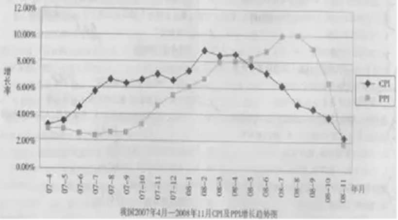

zz-2009-01
哲学基本问题物质和意识的对立只有在非常有限的范围内才有绝对的意义，超过这个范围便是相对的了。这个范围是指
答案：A
本题讲解：物质与意识的「绝对对立」划在哪条线上
答案：A（物质和意识何者为第一性）。
第 0 步：先立模型——哲学基本问题的两个侧面
恩格斯把哲学基本问题概括为「思维和存在的关系问题」，它拆开是两个侧面——物质和意识的关系在这两个侧面上，性质并不一样：
| 侧面 | 回答什么 | 站队分野 |
|---|---|---|
| 第一性 | 谁是本原、谁是派生 | 唯物主义（物质第一性）vs 唯心主义（意识第一性） |
| 同一性 | 意识能否认识存在 | 可知论 vs 不可知论 |
题干这句话出自列宁《唯物主义和经验批判主义》。「只有在非常有限的范围内才有绝对的意义」——要找的就是这个「范围」落在哪个侧面上。
第 1 步：为什么绝对性只住在「第一性」里
本原问题问的是「谁产生谁」，这是一条单向的派生关系：要么物质第一性、意识是派生（唯物），要么意识第一性、物质是派生（唯心）。两条路线非此即彼、不容调和——在这个范围内，对立才谈得上「绝对」。
一旦走出这个范围，对立立刻变相对，因为三者把两端接了起来：
- 同源：意识是物质世界长期发展的产物、人脑的机能——两者本是一家生的；
- 反映：意识是客观世界的主观映象，能正确认识物质——同一性层面讲的就是「符合」而非「为敌」；
- 转化：意识通过实践反作用于物质，观念可以变成现实的力量。
所以「绝对对立」是有边界的：边界之内（本原）必须非此即彼；边界之外（联系、统一、转化）还死守对立，就滑向形而上学的割裂——这不是唯物主义的立场，而是它批评的对象。
第 2 步：对号入座
| 选项 | 判断 | 理由 |
|---|---|---|
| A 何者为第一性 | ✅ | 本原问题 = 绝对对立的唯一合法范围 |
| B 是否具有同一性 | ❌ | 恰恰是「对立变相对」的那个侧面 |
| C 何者更重要 | ❌ | 「重要性」是价值判断，哲学基本问题不作这种划分 |
| D 与社会生活关系更密切 | ❌ | 杜撰的划分标准，不属于哲学基本问题的内容 |
易错点
- 选 B（知道两层模型，但把「绝对」挂错侧面）：方向恰好选反——同一性讲意识能否认识存在，在这个层面二者走向统一，题干说「超出范围便是相对」，说的正是这里。
- 选 C、D（望文生义凑数）：「更重要」「更密切」都是价值/现实重要性的比较，哲学基本问题只问「本原」和「同一性」两件事，根本没有第三、第四问。
- 把「绝对对立」理解成「永远为敌」：列宁不是说物质和意识永远对立，而是说「谁本原」这一个问题不容调和；出了这个问题，恰恰要承认二者的联系与转化。
记忆锚点：对立绝对 = 只在第一性（本原）问题内；同一性、能动反作用、相互转化一出场，对立皆相对。
zz-2009-02
实践检验真理1978年关于真理标准大讨论是一场新的思想解放运动。实践之所以成为检验真理的标准，是由
答案：D
本题讲解：实践凭什么能检验真理
答案：D（真理的本性和实践的特点所决定的）。
第 0 步：先立模型——「检验」这个动作需要什么
先想清楚「检验」要干什么：判定一个认识是不是真理，就是回答主观认识是否与客观实际相符合。于是裁判者必须能把主观、客观两端「摆到一起」对照。带着这个要求去筛候选人：
- 真理自己不行：真理是主观形态的认识，让认识自己证明自己符合客观，等于「主观符合主观」——循环论证；
- 客观事物也不行：离开人的活动，它不会主动「回答」这个认识和我一致吗——缺乏能动性，当不了裁判。
两端都被排除后，剩下的唯一候选就是实践。
第 1 步：机制——真理的本性出题目，实践的特点给手段
| 要素 | 内容 | 在检验中扮演的角色 |
|---|---|---|
| 真理的本性 | 主观与客观相符合 | 提出检验的任务：必须对照「主客观是否一致」 |
| 实践的特点 | 直接现实性：主观见之于客观 | 提供检验的手段：把认识变成现实结果，用结果裁决 |
实践为什么两端都握得住？它是人有目的的活动——带着主观「蓝图」；它又引起客观世界的现实改变——产出客观「成品」。按认识去做，做出来的结果对不对，认识对不对一目了然。1978 年真理标准大讨论「实践是检验真理的唯一标准」，哲学根据正在这里。
第 2 步：对号入座
| 选项 | 判断 | 理由 |
|---|---|---|
| A 真理的主观性和实践的客观性 | ❌ | 只取半截：「主观性」不是根据所在，「客观性」也讲不出桥梁作用 |
| B 真理的相对性和实践的绝对性 | ❌ | 相对/绝对讲的是真理的深度，是另一对范畴，与检验标准无关 |
| C 真理的属性和实践的功能 | ❌ | 仿写教材句式的「近亲」干扰项，丢掉了「本性/特点」的两层精确含义 |
| D 真理的本性和实践的特点 | ✅ | 教材标准表述：本性定任务，特点供手段 |
易错点
- 选 C（「属性」「功能」读着最顺）：这是有意仿写的近义干扰项——「本性」专指「要求主客观相符」这一内在规定，「特点」专指「直接现实性」；换成「属性/功能」，这两层含义就丢了，只剩漂亮话。
- 选 A（半真半假最难防）：它各对了半个词，但拼起来回答不了「凭什么能当标准」——「真理的主观性」恰恰说明真理不能自证，而不是实践能检验它的理由。
- 把「实践的优点」当「实践的根据」：题问的是根据（凭什么），不是作用（有什么用）——审题眼在「由……所决定」四个字上。
记忆锚点：检验真理 = 对照「主观与客观」；真理的本性出题目（要相符），实践的特点给手段（直接现实性）。
zz-2009-03
社会有机体近年，马克思的《资本论》在西方的一些国家销量大增。列宁曾说，马克思《资本论》的成就之所以如此之大，是由于这本书使读者看到整个资本主义社会形态是个活生生的形态，既有“骨骼”，又有“血肉”。人类社会作为一种活的有机体，其“骨骼”系统是指
答案：B
本题讲解：社会有机体的「骨骼」比喻什么
答案：B（与一定的生产力相适应的生产关系）。
第 0 步：先立模型——社会有机体的结构分层
列宁评《资本论》说，这本书让读者看到整个资本主义社会形态是活的有机体，「既有骨骼，又有血肉」。这个比喻对应马克思的社会结构分层：
| 层次 | 内容 | 在比喻中的位置 |
|---|---|---|
| 社会经济结构 | 与一定生产力相适应的生产关系的总和（=经济基础） | 骨骼 |
| 政治上层建筑 | 政治法律制度及设施 | 血肉 |
| 观念上层建筑 | 政治法律思想、道德、宗教、哲学等意识形态 | 血肉 |
抓比喻的着眼点：骨骼的功能是支撑全身——整个社会形态就靠经济结构撑着；血肉长在骨骼之上——上层建筑是「竖立其上」的部分，靠基础供养、随基础变动。
第 1 步：为什么「骨骼」专指生产关系的总和
- 马克思的原文逻辑（《〈政治经济学批判〉序言》）：人们在物质生产中结成的生产关系的总和，构成社会的经济结构，即「法律的和政治的上层建筑竖立其上」的现实基础——「竖立其上」四个字，就是「长在骨骼上」的学理化说法；
- 生产关系把人与人的经济地位固定下来，像骨骼把身体架子固定下来——其他一切社会活动都在这个架子上展开；
- 《资本论》的贡献正在于把资本主义社会「解剖」开、露出这副骨骼：剩余价值理论解剖的正是资本主义生产关系，而不是别的东西。
第 2 步：对号入座
| 选项 | 判断 | 理由 |
|---|---|---|
| A 地理环境、人口因素和生产方式等物质生活条件 | ❌ | 是「社会存在」的总括口径，含自然前提，比经济结构大一圈 |
| B 与一定生产力相适应的生产关系 | ✅ | 生产关系总和 = 经济结构 = 骨骼 |
| C 政治法律制度及设施 | ❌ | 政治上层建筑——长在骨骼上的「血肉」 |
| D 政治法律思想、道德、宗教、哲学等意识形态 | ❌ | 观念上层建筑——同样是「血肉」 |
易错点
- 选 A（「骨骼最硬，所以选最『物质』的」）：望文生义——比喻比的是功能（支撑），不是硬度；而且 A 把地理环境、人口因素这些自然前提打包进来，范围比「经济结构」宽一圈，连「生产方式」（含生产力）也一并装进去了。
- 把生产力直接当骨骼：生产力是生产关系的物质内容，但「骨骼」的对应物是生产关系的总和；题干 B 的限定语「与一定的生产力相适应」正来自「生产关系一定要适合生产力状况」的规律。
- C、D 混淆不清：两个都是「血肉」，一个是制度设施（政治上层建筑），一个是思想观念（观念上层建筑）——都不构成「骨骼」，选它们就是把「上层」当成了「基础」。
记忆锚点：社会有机体解剖图——骨骼 = 经济结构（生产关系总和）；血肉 = 政治上层建筑 + 意识形态；「物质生活条件」是更大的一圈，装不进骨骼。
zz-2009-04
人的本质卢梭在《论人类不平等的起源和基础》中说道：“我认为，在人类的一切知识中，最有用但也最不完善的知识就是关于人的知识。”马克思的唯物史观破解了人是什么这一“斯芬克斯之谜”。马克思在《关于费尔巴哈的提纲》中指出，人的本质在其现实性上是
答案：C
本题讲解：人的本质「在其现实性上」是什么
答案：C（一切社会关系的总和）。
第 0 步：先立模型——马克思接的是什么问题
卢梭感叹「关于人的知识最不完善」；费尔巴哈曾试图回答「人是什么」，但他的答法是把人理解为生物学意义上的类——脱离历史、脱离社会的抽象「共同人性」（理性、意志、爱心之类人人共有的东西）。马克思在《关于费尔巴哈的提纲》（1845 年）第六条给出破解：
人的本质不是单个人所固有的抽象物，在其现实性上，它是一切社会关系的总和。
抓关键词「现实性」：不问「人应当是什么」「人天生拥有什么」，而问现实中的人靠什么成为人。这一问法本身就是对「抽象人性论」的釜底抽薪。
第 1 步：机制——为什么是社会关系的总和
- 人首先是劳动中的人：生产劳动从来是社会性活动，孤立的个人连生存都维持不了——「人的本质」只能到使人成之为人的活动方式里找；
- 现实中的人嵌在生产关系、家庭关系、阶级关系、交往关系等具体的社会关系网里：把这些关系加总起来，才刻画出一个「现实的人」；
- 社会关系是历史的、可变的：关系变了，「人的本质」的现实内容也跟着变——所以不存在一个永恒不变的抽象人性。这也正是后来阶级分析法的哲学根基。
第 2 步：对号入座
| 选项 | 判断 | 理由 |
|---|---|---|
| A 自然属性和社会属性的内在统一 | ❌ | 回答的是「人有哪些属性」，没回答「本质的现实性由什么规定」 |
| B 所有人共同属性的概括 | ❌ | 恰是费尔巴哈「抽象的人」——马克思批判的对象本身 |
| C 一切社会关系的总和 | ✅ | 《提纲》第六条原文 |
| D 自由理性的外化 | ❌ | 唯心主义路线：把人的本质归结为精神、理性的自我展开 |
易错点
- 选 A（最具迷惑性）：「自然属性 + 社会属性」是属性清单式分析，说「人是什么的集合」；题问的是本质「在其现实性上」由什么规定——一问清单、一问规定性，层次不同。且自然属性（吃喝、繁衍）是人存在的前提，不是人区别于动物的本质规定。
- 选 B（不知道批判对象）：不知道这句话正是冲着「抽象共同人性」来的，把被批判的观点当成了答案——做引文题要先看清「引言在反对谁」。
- 选 D（唯心主义残留）：「自由理性的外化」是黑格尔式回答——本质在精神里，再「外化」成现实；马克思恰恰把方向反过来：本质在现实的物质性社会关系里。
记忆锚点：问「人的本质」→ 答「社会关系」；见「现实性」三字 → 《关于费尔巴哈的提纲》第六条 → 一切社会关系的总和。
zz-2009-05
货币流通规律流通中的货币需要量是考察经济生活运行的一项重要指标。假设某国去年的商品价格总额为24万亿元，流通中需要的货币量为3万亿元。若今年该国商品价格总额增长10%，其他条件不变，今年流通中需要的货币量为
答案：C
本题讲解：货币流通规律的一道计算题
答案：C（3.3 万亿元）。
第 0 步：先立公式——流通中需要多少货币
货币流通规律：一定时期内流通中所需要的货币量 = 商品价格总额 ÷ 同一单位货币的平均流通速度。
道理：商品交换需要货币做媒介——价格总额越大，需要的「媒介」越多；货币转手越快（流通速度越高），同一枚货币可以反复服务，需要量越少。一个正比、一个反比。
第 1 步：把题目拆进公式
| 量 | 数值 | 来源 |
|---|---|---|
| 去年商品价格总额 | 24 万亿元 | 题给 |
| 去年货币需要量 | 3 万亿元 | 题给 |
| 货币流通速度 | 24 ÷ 3 = 8 次/年 | 隐含条件 |
| 今年价格总额 | 24 × (1+10%) = 26.4 万亿元 | 题给「增长 10%」 |
| 今年货币需要量 | 26.4 ÷ 8 = 3.3 万亿元 | 待求 |
关键一步是挖出隐含条件：去年两个数据本身在告诉你流通速度是 8 次/年；「其他条件不变」保证今年速度仍是 8。于是货币需要量与价格总额同比例增长：3 × 1.1 = 3.3（万亿元）——两条算法殊途同归。
第 2 步：对号入座
| 选项 | 判断 | 理由 |
|---|---|---|
| A 4.2 万亿元 | ❌ | 与 26.4 ÷ 8 = 3.3 对不上，折算比例用错的凑数项 |
| B 3.5 万亿元 | ❌ | 同上，比例基数或速度用错的凑数项 |
| C 3.3 万亿元 | ✅ | 3 × (1+10%) = 3.3，同比例变化 |
| D 2.4 万亿元 | ❌ | 恰是 26.4 − 24：误把价格总额的增量当成「流通所需的货币量」 |
易错点
- 选 D（最像「算出来的数」）：2.4 万亿确实是今年比去年多出的价格总额，但流通所需货币量对应的是「总盘子」的媒介量，不是「增量」——忘了同比例、直接报增长额。
- 没挖出流通速度：不先算 24 ÷ 3 = 8，就失去了检验一切算法的标尺。
记忆锚点：货币需要量 = 价格总额 ÷ 流通速度；「其他条件不变」 = 同比例变化：3 × 1.1 = 3.3 万亿。
zz-2009-06
国家垄断资本主义国家垄断资本主义条件下，政府对经济生活进行干预和调节的实质是
答案：A
本题讲解：国家干预经济是为谁服务
答案：A（维护垄断资产阶级的整体利益和长远利益）。
第 0 步：先立模型——问「实质」就是问「为谁服务」
国家垄断资本主义 = 私人垄断资本与国家政权相结合的垄断资本主义。政府的一切干预调节，都要经过「国家政权掌握在谁手里」这道闸门：在资本主义制度下，国家本质上是恩格斯所说的「理想的总资本家」——它不代表某个个别的垄断组织，而代表垄断资产阶级作为一个阶级。
第 1 步：机制——干预能干什么、不能干什么
| 干预的实际作用 | 能否成为「实质」 |
|---|---|
| 缓和局部矛盾、平抑经济波动、提供福利 | 是手段与效果，不是目的本身 |
| 消除或防止经济危机 | 做不到：危机根源于资本主义基本矛盾，干预只能缓和冲击 |
| 维持经济稳定增长 | 手段层面的目标，为的是保障垄断资本长期的盈利条件 |
「实质」问的是落脚点：一切手段最终服务于垄断资产阶级的整体利益（调节它们内部你死我活的竞争）与长远利益（维持制度运转、避免危机中「同归于尽」）。
第 2 步：对号入座
| 选项 | 判断 | 理由 |
|---|---|---|
| A 维护垄断资产阶级的整体利益和长远利益 | ✅ | 「总资本家」的阶级实质 |
| B 维持资本主义经济稳定增长 | ❌ | 政策目标/效果，属手段层面 |
| C 消除或防止经济危机的爆发 | ❌ | 基本矛盾决定危机不可避免，此说法本身不成立 |
| D 提高资本主义社会的整体福利水平 | ❌ | 缓和矛盾的手段与表象 |
易错点
- 选 C（「干预万能」的直觉）：混淆了「缓和危机冲击」与「消除危机根源」——凯恩斯式干预之后危机仍周期性爆发。
- 选 B/D（把效果当目的）：题干问「实质」，B、D 是「看得见的成绩单」，成绩单不等于为谁服务。
记忆锚点：国家垄断资本主义=垄断资本+国家政权；国家=「理想的总资本家」→ 实质=维护垄断资产阶级的整体、长远利益。
zz-2009-07
资本有机构成某钢铁厂因铁矿石价格上涨，增加了该厂的预付资本数量，这使得该厂的资本构成发生了变化，所变化的资本构成是
答案：B
本题讲解：涨价动的是哪种「资本构成」
答案：B（资本价值构成）。
第 0 步：先立模型——三种构成的定义链
政治经济学里「资本构成」有三个概念，考的就是把它们分开：
| 概念 | 定义 | 由什么决定 |
|---|---|---|
| 资本技术构成 | 生产资料数量与劳动力数量的比例（实物层面） | 生产技术水平 |
| 资本价值构成 | 不变资本 c 与可变资本 v 的比例（价值层面） | 技术构成 + 生产要素价格 |
| 资本有机构成 | 由技术构成决定并反映技术构成变化的价值构成 | 技术进步 |
注意价值构成的「双因性」：它既随技术构成变（机器多了 c 变大），也随价格变（原料涨价 c 同样变大）。
第 1 步：判别口诀——先问「技术动没动」
- 铁矿石价格上涨：钢铁厂所用的矿石吨数、工人人数等实物比例并没有变 → 技术构成不变；
- 但矿石贵了，投在原材料上的不变资本 c 增大，c : v 的价值比例改变 → 价值构成变了；
- 有机构成的门槛是「由技术构成决定并反映技术构成变化」——本题没有技术变化，所以这次价值构成的变化不构成有机构成的变化。
第 2 步：对号入座
| 选项 | 判断 | 理由 |
|---|---|---|
| A 资本技术构成 | ❌ | 实物数量比例没动，只动了价格 |
| B 资本价值构成 | ✅ | c 增大，c:v 价值比例改变 |
| C 资本物质构成 | ❌ | 不是政治经济学规范概念，凑数项 |
| D 资本有机构成 | ❌ | 缺「技术构成变化」这一前提 |
易错点
- 直接选 D（惯性跳坑）：见到「资本构成变化」就联想「有机构成」——判别关键是先问一句「技术变了吗」；本题只是涨价，有机构成的定义链条接不上。
- 选 A（把价格当实物）：涨价改变了「值多少钱」，不改变「用多少东西」。
记忆锚点：技术构成看实物，价值构成看钱（c:v）；有机构成=技术引起的那部分价值构成变化。价格动→只动价值构成。
zz-2009-08
革命对象与革命同盟军1925年毛泽东在《中国社会各阶级的分析》中指出，中国过去一切革命斗争成效甚少，其基本原因就是
答案：D
本题讲解：《中国社会各阶级的分析》开篇立论
答案：D（没有团结真正的朋友以攻击真正的敌人）。
第 0 步：先立原文——这是「原文定位题」
1925 年 12 月，毛泽东发表《中国社会各阶级的分析》，开篇两句话就是考点：
谁是我们的敌人？谁是我们的朋友？这个问题是革命的首要问题。中国过去一切革命斗争成效甚少，其基本原因就是因为不能团结真正的朋友，以攻击真正的敌人。
写这篇文章的目的，就是用马克思主义的阶级分析方法，把「敌、我、友」从经济地位上分清楚：工业无产阶级是领导力量，半无产阶级、小资产阶级是最接近的朋友，地主阶级、买办阶级是敌人，民族资产阶级的右翼可能是敌人。
第 1 步：机制——为什么「分清敌友」是首要问题
- 革命要成功，必须回答「依靠谁、团结谁、打击谁」——力量配置错了，斗争必然成效甚少；
- 辛亥革命以来历次斗争的教训正在于：没有发动占人口绝大多数的工农，也没有认清真正的敌人；
- 所以毛泽东把「不能团结真正的朋友，以攻击真正的敌人」概括为基本原因，并以阶级分析作为解决之道。
第 2 步：对号入座
| 选项 | 判断 | 理由 |
|---|---|---|
| A 没有找到革命的新道路 | ❌ | 「农村包围城市」是 1927 年大革命失败后井冈山时期才形成的，时间对不上 1925 年 |
| B 没有扩大民主主义的宣传 | ❌ | 非该文对失败原因的概括 |
| C 没有到群众中做实际的调查 | ❌ | 调查研究作风的要求出自后来的《反对本本主义》（1930 年），非本句原文 |
| D 没有团结真正的朋友以攻击真正的敌人 | ✅ | 开篇原文，逐字对应 |
易错点
- 选 C（「调查研究」最像毛泽东的风格）：风格对、出处错——把后来的方法论文献挪到了 1925 年。
- 选 A（把「道路问题」前置）：农村包围城市的道路要到 1927 年之后逐步形成，1925 年的文章不可能以此作总结。
记忆锚点：1925《中国社会各阶级的分析》开篇——首要问题=谁是敌人谁是朋友；成效甚少基本原因=不能团结真正的朋友以攻击真正的敌人。
zz-2009-09
实事求是与反对教条主义延安时期，毛泽东写下了著名的《实践论》、《矛盾论》，主要是为了克服党内严重的
答案：D
本题讲解：《实践论》《矛盾论》主要是克服什么——先诊病，再看药方
答案：D（教条主义）。
第 0 步：先把「著作怎么来的」这个机制立起来
两篇著作不是凭空写的教科书，而是对症下药的药方：先有党内的「病」，才有针对这个病写出的哲学。所以解这类题的正确顺序是——先诊断 1937 年党内最严重的思想病是什么，再看两篇文章的药理是否对着这个病，答案自然浮出，而不是在四个「主义」里凭印象挑。
1937 年夏，延安，毛泽东在抗日军政大学讲授《辩证法唯物论（讲授提纲）》，《实践论》《矛盾论》是其中两节。此时土地革命战争时期接连出现的错误刚让革命付出惨重代价，病根是：把马克思主义教条化、把共产国际决议和苏联经验神圣化，照搬本本指挥中国革命（王明「左」倾教条主义危害最烈）。这就是当时贯穿全党的主要病根。
第 1 步：两味药分别治什么
| 药方 | 药理 | 治的是哪种病 |
|---|---|---|
| 《实践论》 | 认识论：实践→认识→再实践，知行统一——真理的标准是实践，不是本本 | 破「唯书、唯上」、轻视实践的本本主义 |
| 《矛盾论》 | 辩证法：矛盾特殊性——具体问题具体分析，一般原理不能脱离具体条件硬套 | 破「照搬公式、生吞活剥」的套用 |
两味药从认识论（认识从哪来、检验标准是什么）和辩证法（原理怎么用）两个根子上清算同一种病：把书本、决议当教条——即教条主义（本本主义）。这也正是后来「实事求是」思想路线的哲学奠基。
第 2 步：四个选项对号入座
| 选项 | 判断 | 对应的误解 |
|---|---|---|
| A 经验主义 | ❌ | 「《实践论》批评过它」——确实批评（轻视理论、满足于一得之功），但那是次要矛头，不是「主要是为了克服」的对象 |
| B 冒险主义 | ❌ | 「反对错误就行」——它是军事路线层面的错误，与哲学著作的针对性层面错位 |
| C 机会主义 | ❌ | 「挑个最泛的总没错」——它是对右倾/「左」倾路线错误的泛称，太宽，答不出两篇哲学著作的特定矛头 |
| D 教条主义 | ✅ | 党内当时最严重、两篇著作集中克服的错误倾向 |
易错点：每个干扰项的病因
- 误选 A 的根源：知道《实践论》点了经验主义的名，但没分清「也批评」与「主要是为了克服」——主语是危害更烈、贯穿全党的教条主义。经验主义与教条主义同属主观主义，但 1937 年前后主要危险是后者的祸害刚显形。
- 误选 B/C 的根源：把「克服党内严重的错误」当成随便哪条路线错误都行。哲学著作对的是思想方法层面的病（教条主义）；冒险主义、机会主义是政治/军事路线层面的定性，层级对不上。
记忆锚点：先诊病后开方——病根是教条化、神圣化；《实践论》破「唯书」、《矛盾论》破「照搬」→ 主要矛头 = 教条主义（本本主义）。
zz-2009-10
新民主主义经济纲领中共七届二中全会后，党制定和实行的新民主主义经济建设的方针政策是
答案：B
本题讲解：七届二中全会后的经济建设方针——四个选项来自四个年代
答案：B（公私兼顾、劳资双利、城乡互助、内外交流）。
第 0 步：先立机制——这是「时间定位题」，先建时间轴再对号
题眼是「中共七届二中全会后」。四个选项不是同一方针的四种说法，而是四个不同年代各出一条方针——命题人把它们摆在一张卷子上，考的就是能否把每条方针钉在它的年代上。先建轴：
| 年代 | 会议/文件 | 方针 | 对应选项 |
|---|---|---|---|
| 1949 年 3 月 | 七届二中全会（后写入《共同纲领》） | 公私兼顾、劳资两利、城乡互助、内外交流 | B |
| 1956 年 | 中共八大 | 既反保守又反冒进，在综合平衡中稳步前进 | A |
| 1961 年 | 八届九中全会 | 调整、巩固、充实、提高（八字方针） | C |
| 20 世纪 90 年代以后 | 转变经济增长方式 | 速度、结构、效益、质量相统一 | D |
题干锁在 1949 → 取第一行，B。选项 B 的「劳资双利」即标准表述「劳资两利」，属同义换词，不是陷阱。
第 1 步：为什么 1949 年是这条方针（预判「为什么」）
- 全国胜利在即，经济形态是新民主主义经济：国营经济、合作社经济、个体经济、私人资本主义、国家资本主义五种成分并存——公的私的都在，必须「公私兼顾」；
- 工作重心由乡村转向城市，城市以生产建设为中心：恢复生产要劳资一起干（劳资两利）、城乡货畅其流（城乡互助）、对内对外都要交流（内外交流）——合称「四面八方」政策，写入《共同纲领》的经济政策部分。
第 2 步：每个干扰项错在哪一年（归因）
- 误选 C：「调整、巩固、充实、提高」是记忆里最「出名」的经济方针，但它是 1961 年为克服国民经济严重困难提出的，比题干晚十二年——把「最有名」当成「最早」。
- 误选 A：八大（1956）确实讲经济建设，但「既反保守又反冒进，在综合平衡中稳步前进」针对的是当时的急躁冒进，晚于 1949。
- 误选 D：「实现速度、结构、效益、质量的统一」是后来转变经济增长方式的要求，时代词最时髦、年代却最晚。
易错点：两类典型失误
- 把「最有名」当「最早」→ 误选 C：八字方针在教材里出现频率最高，印象最深；但「出名」与「符合题干年代」无关。越熟的口号越要先钉年代再下手。
- 被「劳资双利/两利」一字之差吓退 → 漏选 B：命题人常做同义换词（双利=两利、四面八方政策的通行表述），这是正常现象不是陷阱；反过来，若选项出现年代错配（如给 1949 的事配 1961 的口号）才是真陷阱。换词照选，错配才弃。
记忆锚点：1949 七届二中全会/《共同纲领》= 公私兼顾、劳资两利、城乡互助、内外交流（四面八方）；1956 八大反保守反冒进；1961 八字方针；90 年代讲速度结构效益质量——经济方针题先钉年代再对选项。
zz-2009-11
科学发展观科学发展观的根本方法是
答案：C
本题讲解：科学发展观的「根本方法」——一个理论四张名片，按位对号
答案：C（统筹兼顾）。
第 0 步：先立机制——这套题考的是「要素表」，不是理解题
科学发展观（党的十七大写入党章）有一张固定的「要素表」，命题人年年都在这张表上换位置提问：今年问「根本方法」，明年可能问「第一要义」。解法不是逐项理解，而是把四张「名片」的对应关系背死，再按题眼对号：
| 要素位 | 内容 | 回答的问题 |
|---|---|---|
| 第一要义 | 发展 | 要不要发展 |
| 核心 | 以人为本 | 为谁发展、靠谁发展 |
| 基本要求 | 全面协调可持续 | 实现什么样的发展 |
| 根本方法 | 统筹兼顾 | 怎样发展 |
第 1 步：题眼是「方法」二字——为什么根本方法是统筹兼顾
「方法」回答的是操作层问题：发展千头万绪，怎么摆平各方面关系？答案是统筹——统筹城乡发展、区域发展、经济社会发展、人与自然和谐发展、国内发展和对外开放（「五个统筹」），总揽全局、兼顾各方。而「发展」「以人为本」「全面协调可持续」分别回答要不要发展、为谁发展、实现什么样的发展——它们是方向和标准，不是操作方法。问「方法」就只能落在统筹兼顾上。
第 2 步：四个选项按位对号
| 选项 | 判断 | 占的是哪个位置 |
|---|---|---|
| A 把发展作为第一要义 | ❌ | 占「第一要义」的位置——题眼不是「要义」 |
| B 以人为本 | ❌ | 占「核心」的位置——价值立场，不是方法 |
| C 统筹兼顾 | ✅ | 占「根本方法」的位置 |
| D 协调可持续 | ❌ | 属「全面协调可持续」，占「基本要求」的位置 |
易错点：每个干扰项的病因
- 误选 D 的根源：「可持续」字眼看着最像「怎么干」，但「全面协调可持续」整体是基本要求——说的是实现什么样的发展，是要求不是方法；且选项只截了半句「协调可持续」，更易被当成独立提法。
- 误选 B 的根源：觉得「以人为本」地位最高就选它——地位高低与题眼无关，考的是位置对应。
- 四要素张冠李戴：这类题唯一解法是把名片表背死；命题人换一个问法，答案就换一个字母。
记忆锚点：一句口诀——要义发展、核心人为本、基本要求全面协调可持续、根本方法统筹兼顾；见「方法」找「统筹」。
zz-2009-12
社会主义新农村社会主义新农村建设的中心环节是
答案：A
本题讲解：新农村建设的「中心环节」——二十字方针先摆全，再按逻辑抓源头
答案：A（生产发展）。
第 0 步：先立机制——二十字方针是一个有层次的系统，不是并列口号
党的十六届五中全会（2005 年）提出社会主义新农村建设二十字要求。这五句不是随便排的，各有层面、各有位置——「中心环节」问的是从哪里抓起：
| 要求 | 层面 | 在系统中的位置 |
|---|---|---|
| 生产发展 | 物质（经济） | 中心环节——其余各项的物质基础 |
| 生活宽裕 | 民生 | 生产发展带来的落脚点（结果） |
| 乡风文明 | 精神文明 | 文化层面 |
| 村容整洁 | 人居环境 | 环境层面（本题选项故意不列） |
| 管理民主 | 政治保障 | 基层民主治理 |
第 1 步：为什么中心环节是「生产发展」（预判「为什么」）
- 抓源头：宽裕、文明、整洁、民主，每一项都要花钱、都要以经济条件为前提——钱从哪来？靠生产。没有生产发展，其余四句都是空中楼阁；
- 辨「结果」与「抓手」：生活宽裕是建设想达到的结果，生产发展才是下手干活的抓手——「中心环节」问抓手，不问目的；
- 一脉相承：这与党的基本路线「以经济建设为中心」、靠发展生产力解决「三农」问题的思路同构——抓中心环节就是抓主要矛盾。
第 2 步：四个选项对号入座
| 选项 | 判断 | 对应的误解 |
|---|---|---|
| A 生产发展 | ✅ | 物质基础，中心环节 |
| B 生活宽裕 | ❌ | 「最像最终目标」——把目的当中心，落脚点不是抓手 |
| C 乡风文明 | ❌ | 精神文明层面，是结果之一，不构成前提 |
| D 管理民主 | ❌ | 政治保障层面，为建设提供保障而非物质基础 |
易错点：每个干扰项的病因
- 误选 B 的根源：把「为了什么」当成「从哪抓起」。问「中心环节」找源头，问「目的/落脚点」才找宽裕。
- 漏记「村容整洁」：选项只列四句，容易让人误以为二十字方针只有四句——背的时候务必背全五句，命题人常拿「没被列的那句」出干扰项或反向提问。
记忆锚点：二十字 = 生产发展（中心环节）、生活宽裕、乡风文明、村容整洁、管理民主；中心抓源头——生产。
zz-2009-13
实事求是思想路线马克思主义中国化理论成果的精髓是
答案：C
本题讲解：「精髓」问的是把普遍原理接到中国大地上的那个枢纽
答案：C（实事求是）。
第 0 步：先立机制——「中国化」这道题究竟在问什么
马克思主义诞生于 19 世纪的欧洲，搬进中国要回答两个问题：一是用不用——用，普遍真理不存在过时问题；二是怎么用——必须同中国具体实际相结合，这正是「中国化」的全部着力点。而「结合」这个动作有一条标准流程，教材把它概括为党的思想路线：
一切从实际出发 → 理论联系实际 → 在实践中检验真理和发展真理
这条流程里每一步都靠同一个内核撑着：实事求是——「实事」是客观存在的一切事物，「求」是研究探寻，「是」是内部联系即规律性。抽掉它，「结合」就无从下手。所以「精髓」不是形容词堆出来的，而是由「贯穿」二字定义的：实事求是贯穿于马克思主义中国化各个理论成果形成和发展的全过程，体现在各个理论成果的各个基本观点之中。凡不具备这种贯穿地位的提法，都替换不了它——这是判断四个选项的总标尺。
第 1 步：用三代成果验证「贯穿性」
| 理论成果 | 实事求是的地位 |
|---|---|
| 毛泽东思想 | 毛泽东用它概括党的思想路线；它是毛泽东思想活的灵魂（实事求是、群众路线、独立自主）三个基本方面之一 |
| 中国特色社会主义理论体系 | 邓小平重新确立这条路线，主张解放思想与实事求是相统一；此后各成果仍以它为精髓 |
每一代成果都在不同历史条件下回答新问题，但「从实际出发、按规律办事」这个方法内核一以贯之——「一脉相承」的脉，就是实事求是这条主线。题干问的「精髓」，正是对这条主线的固定命名。
第 2 步：其余三项各在各的位置上
| 选项 | 它的真实身份 | 替换不了「精髓」的原因 |
|---|---|---|
| A 理论联系实际 | 思想路线流程的中间一环（方法要求） | 一环不等于整条链：精髓贯穿全流程，A 只是流程中的一步 |
| B 解放思想 | 实事求是的前提与条件（先破除教条束缚才能求得规律） | 逻辑上「在前」：通往精髓的路径不是精髓本身 |
| D 与时俱进 | 马克思主义的理论品质 | 回答的是「这门理论什么气质」，答不了「结合的枢纽是什么」这个固定问法 |
易错点
- 选 A（内容最「实」的诱惑）：理论联系实际确实离答案最近，但命题正是在「一环」与「整链」之间设卡。解法：回忆思想路线是一条三步流程，A 只是其中一步，被贯穿者当不了贯穿者。
- 选 B（口号最响的诱惑）：解放思想是改革开放时期最响亮的提法，容易先入为主；但它是「为了做到实事求是」的条件——前提地位不等于精髓地位。
- 选 D（字面最像的诱惑）：「品质」「精髓」「灵魂」字面都是「根本属性」家族，最具迷惑性；但「与时俱进」说的是理论自身的属性，而题干问的是中国化「结合」动作靠什么支撑——枢纽只有实事求是。
记忆锚点：见「马克思主义中国化理论成果的精髓」→ 填实事求是；它在两处被立为根本——思想路线的内核 + 活的灵魂三基本点之一；解放思想是前提、理论联系实际是一环、与时俱进是品质，三者都替换不了它。
zz-2009-14
两岸关系2008年5月28日，中共中央总书记胡锦涛和中国国民党主席吴伯雄在北京人民大会堂举行了两党在新形势下的首次会谈。此次会谈
答案：A
本题讲解：两岸时政题的「人对人 · 年份 · 产出物」配对法
答案：A（就促进两岸关系改善和发展达成广泛共识）。
第 0 步：先立方法——识记题先拆三要素，再对产出物
时政识记题考的不是理解，是把人与事对准。题干已经给出三个锚点：2008 年 5 月 28 日、胡锦涛 × 吴伯雄（党对党）、北京人民大会堂——三个锚点合起来把事件钉死：新形势下国共两党领导人的首次会谈。于是解题只剩一步：判断四个选项哪个是这次会谈真实的「产出物」。识记题最稳的打法，是把容易被命题人挪用的相邻事件全部排上时间轴，让每个选项各归其位，而不是凭印象逐项猜。
第 1 步：把三个易混事件排上时间轴
| 时间 | 会谈（主体） | 产出物 / 定性 | 对应选项 |
|---|---|---|---|
| 2005-04 | 胡锦涛 × 连战：两党领导人时隔 60 年再握手，「破冰之旅」，开启两党对话先声 | 发布《两岸和平发展共同愿景》 | B、C |
| 2008-05-28 | 胡锦涛 × 吴伯雄：新形势下两党首次会谈 | 就促进两岸关系改善和发展达成广泛共识 | A ✓ |
| 2008-06 | 陈云林 × 江丙坤：海协会 × 海基会（「两会」）商谈 | 签署《海峡两岸包机会谈纪要》《海峡两岸关于大陆居民赴台湾旅游协议》 | D |
时间轴一排开，格局立刻清楚：对话先声与《共同愿景》属于 2005 年，包机纪要属于 2008 年 6 月的两会商谈；2008 年 5 月底这次党际会谈的产出只有「共识」。这次共识还直接推动了当年 6 月的两会复谈——三件事是因果相扣的一条链，不是并列的四件事。
第 2 步：逐项归位
- A：胡吴会谈的主题正是两岸关系改善和发展；会谈层面的成果以「达成广泛共识」的形式表述——两党会谈不签行政协议。A 正确。
- B「开启国共两党对话先声」：这是 2005 年连战「破冰之旅」的定性——先声三年前已开；题干的「首次会谈」带「新形势下」限定，丢掉限定语就会把两次会谈混为一谈。B 错。
- C「发布《两岸和平发展共同愿景》」：该文件发布于 2005-04-29 胡连会谈，与题干年份差三年、差一任国民党主席。C 错。
- D「签署《海峡两岸包机会谈纪要》」：签署主体是海协会与海基会（两岸分别授权的两会），不是国共两党；时间是 2008 年 6 月陈江会谈。主体、时间双双不符。D 错。
易错点
- 把「共识」当「协议」→ 误选 D：D 时间上离题干最近（只差半个月），是四个选项里迷惑性最强的一个；排除它的关键不在年份而在主体——两党会谈谈共识，签纪要、协议是「两会」的职能。主体一换，选项即错。
- 把「首次会谈」当「首次对话」→ 误选 B：2005 年已有破冰对话，2008 年的「首次」只在新形势下成立。
- 被名文件知名度带跑 → 误选 C：《两岸和平发展共同愿景》名气最大，但识记题认年份不认名气。
记忆锚点：两党会谈谈共识（胡吴 2008-05），两会会谈签协议（陈江 2008-06），破冰与《共同愿景》归 2005（胡连）——主体加年份，双坐标定位。
zz-2009-15
神舟七号2008年9月25日，我国“神州七号”航天飞船成功进入太空，首次实现了
答案：D
本题讲解：航天里程碑题——每个「首次」都要挂对飞行器与年份
答案：D（出舱活动）。
第 0 步：先立机制——「首次」是按里程碑排队的
航天类时政题不考技术原理，考的是里程碑顺序：中国载人航天与探月工程是按台阶走的，每个台阶各有一个专属「首次」，谁也不重复、谁也不能提前。题干给了两个锚点：2008 年 9 月 25 日发射、神舟七号——所以题问的「首次」必须同时满足两个约束：挂在神染名下、发生在神七那次飞行中。这一句审题就把排除法启动了：四个选项里凡是别的飞行器/别的年份的成果，直接出局。
第 1 步：里程碑对号表
| 飞行器 | 时间 | 专属「首次」 | 对应选项 |
|---|---|---|---|
| 神舟五号 | 2003-10 | 首次载人飞行（杨利伟） | A |
| 神舟六号 | 2005-10 | 多人多天载人飞行（费俊龙、聂海胜） | — |
| 嫦娥一号 | 2007-10 | 首次绕月探测（探月工程线，月球卫星，不是载人飞船） | B |
| 神舟七号 | 2008-09 | 首次出舱活动（太空行走，翟志刚） | D ✓ |
注意表里还有一条暗线：天地对话（地面与在轨航天员通话）早在神舟五号阶段就已建立，神六又做过与家人的天地通话——它根本排不进任何一个「首次」的专属名单，对应选项 C。
第 2 步：为什么神七的答案是「出舱」
神舟七号乘组翟志刚、刘伯明、景海鹏；飞行第 2 天（9 月 27 日）翟志刚身着舱外航天服走出轨道舱、在太空挥舞五星红旗——中国航天员第一次离开飞船进入开放太空。此前所有飞行中人始终被「关」在舱内，神七跨出的是从「乘飞船」到「太空行走」的台阶；空间出舱又是后续交会对接、建空间站的前置技术，所以它当之无愧是 2008 年的头条里程碑。
易错点
- 误选 A（载人飞行）：把「载人航天」这个大工程的起点误当作 2008 年的成果——首次载人是神舟五号 2003 年，比神七早整整五年。
- 误选 B（绕月探测）：绕月属于探月工程（嫦娥一号，2007 年发射），连「神舟」系列都不是，也不满足题干「航天飞船」的限定；两条工程线并行推进、最易串线。
- 误选 C（天地对话）：以为出舱才需要天地通信，其实天地通信链路从神五起就是载人飞行的标配，谈不上「首次」。
- 总病根：把不同阶段、不同工程的成果混到同一个时间点。识记题靠一张对号表免疫：先分工程线，再钉年份。
记忆锚点：神五载人（03）→ 神六多人多天（05）→ 嫦娥绕月（07，探月线）→ 神七出舱（08）；口诀「神七一飞，太空漫步」。
zz-2009-16
尼泊尔选举在2008年4月中旬举行的尼泊尔制宪会议选举中，一举成为第一大党的是
答案：B
本题讲解：国际时政识记题——用「国别 + 年份 + 事件」三点定位，用背景链加固记忆
答案：B（尼泊尔共产党(毛主义)）。
第 0 步：先立背景链——这场选举为什么值得出题
国际时政题的答题单元是三件套：哪国、哪年、什么事。题干给出：尼泊尔、2008 年 4 月中旬、制宪会议选举。单看一场小国选举似乎不必出题，把它在背景链上的位置摆出来就明白选材逻辑了：
- 2006 年《全面和平协议》签署，十年内战结束，武装斗争转入和平进程；
- 2007 年底各党敲定废除君主制、实行共和；
- 2008 年 4 月制宪会议选举——选出负责起草新宪法、组建首届共和政府的制宪会议；
- 2008 年 5 月制宪会议宣布成立共和国，延续两百多年的君主制终结；
- 选举第一大党的领导人普拉昌达于同年 8 月出任共和国首任总理。
一年之内「选举翻盘 + 废王建共 + 游击队领导人组阁」三连发，事件新、变化大——这正是年度国际时政的选材口味，也是本题的记忆抓手。
第 1 步：四党对号表
| 政党 | 政治底色 | 选举结局 | 对应选项 |
|---|---|---|---|
| 尼泊尔共产党（毛主义） | 十年内战的领导力量，刚由武装斗争转入政治进程 | 一举成为第一大党，随后主导组阁 | B ✓ |
| 尼泊尔共产党（联合马列） | 走议会道路的左翼老牌力量 | 位居毛主义党之后 | A |
| 尼泊尔大会党 | 尼泊尔历史最久的传统大党 | 同样不敌毛主义党 | C |
| 尼泊尔民族民主党 | 与君主制绑定较深的老党，实力有限 | 席位寥寥 | D |
第 2 步：两个「尼共」的分辨（本题唯一设障点）
选项 A 与 B 开头都是「尼泊尔共产党」，差别全在括号里的后缀——这是命题人故意并排的两支力量：
- 联合马列：长期走议会道路的「体制内」老牌左翼，名字正式度高、存在感一直稳定，但 2008 年的新闻主角不是它；
- 毛主义（名称源自毛泽东主义）：以十年武装斗争震动全国、刚转入和平政治，选举中一夜翻盘成第一大党——黑马才上头条，上头条才进真题。
其余两党按底色归位即可：大会党再老牌，也顶不住「结束王权、共和新政」议题下毛主义党的声势；民族民主党与王权绑定，在废王选举中天然边缘化。
易错点
- 误选 A（名称正式度错觉）：以为「联合马列」听着更「正规」就当是大党——识记题认新闻事实，不认名称气质；两个「尼共」张冠李戴是本题主陷阱。
- 误选 C（大党必胜惯性）：按「老牌大党赢面大」的常识去猜——这场选举恰恰是反常规的一届，常识在识记题面前无效。
- 误选 D（凑数心态）：民族民主党保王色彩重，在「废王」选举中席位寥寥，绝无可能「一举」成为第一大党。
- 总病根：国际时政没有推导过程，唯一可靠的是把当年头条钉成卡片——「毛主义第一大党 / 共和国成立 / 普拉昌达组阁」三件事互相锁死，见一推二。
记忆锚点：尼泊尔 2008 = 毛主义第一大党 + 共和元年 + 普拉昌达首任总理；联合马列是另一支尼共，别张冠李戴。
zz-2009-17
意识的能动作用近一年多来，由美国次贷危机引发的金融危机迅速在全球蔓延。在危机面前，人们应该主动积极应对，化“危”为“机”。下列名言中，符合意识能动性原理的有
多选题：点击切换选中，可多选；少选、错选均不得分。
答案：ABCD
本题讲解：化"危"为"机"——意识的能动性原理如何对号入座
答案：ABCD（全选）。
第 0 步：先立机制——意识的能动性分三层"上班"
面对危机（客观存在的事实），"化危为机"靠什么？靠的就是意识的能动作用。它不是一句空话，而是分三个层面起作用：
| 层面 | 在干什么 | 题干场景 |
|---|---|---|
| 认识世界 | 有目的、有计划、有创造性地认识危机的成因与走势 | 看清"危"里藏着什么"机" |
| 调节自身 | 意识对人的心理、生理活动和意志状态有调节作用 | 信心、恐惧情绪直接影响应对行动 |
| 指导实践 | 通过指导实践把观念的力量变成改造世界的力量 | "主动积极应对"这个动作本身 |
题干"化'危'为'机'"已经把场景点明：危机的走向不取决于危机本身，而取决于人的主动应对——这正是意识能动性发挥作用的舞台。四个选项逐一对号。
第 1 步：四个选项逐层入座
- A 信心比黄金更重要：信心不能当钱花，但能稳定预期、鼓舞行动——精神力量通过人转化为物质力量，属于意识的调节与反作用。✅
- B 我们恐惧的就是恐惧本身（罗斯福名言）：恐惧是一种意识状态，它本身会成为瘫痪行动的原因；克服恐惧正是意识对自身心理的调节。✅
- C 问题与解决问题的方法是同时产生的（恩格斯）：问题出现时，解决它的条件与"方法根据"也已孕育其中——但方法不会自动掉下来，要靠人发挥能动性去发现、去造。✅
- D 事不避难，知难不难：正视困难、把"难"认识透了就不再难——认识和意识在转化矛盾中起作用。✅
四个选项分别落在"调节心理（A、B）—主动找方法（C）—认识转化困难（D）"，全在意识能动性范围内 → ABCD。
易错点：每种误排对应哪种误解
- 误排除 C：把"方法同时产生"读成"问题无需人的认识活动就自动解决"——恰恰相反，它说的是解决方法的根据已客观存在，但把方法找出来、用起来靠人的能动活动。这正是后期公开参考答案把它收入 ABCD 时特意强调的点。
- 漏 B：觉得"恐惧"太主观、不像原理——其实意识对心理生理活动的调节本来就是能动性的表现层之一。
- 把能动性理解成"意识直接改变世界"：意识不能直接改变物质，必须通过实践；题干"应对"二字就是实践环节。四个选项没有一个说"意识直接消除危机"，所以不存在越界项。
记忆锚点：意识能动性三层——认识深、心理稳、实践成；"危"变"机"靠这三层同时开工，四个名言各占其位，全选。
zz-2009-18
理论创新与群众实践邓小平说：“农村搞家庭联产承包，这个发明权是农民的。农村改革中的好多东西，都是基层创造出来，我们把它拿来加工提高作为全国的指导。”这对我们实现思想理论创新具有普遍指导意义，它要求我们
多选题：点击切换选中，可多选；少选、错选均不得分。
答案：ACD
本题讲解：邓小平论农村改革——理论创新的三个来源
答案：ACD。
第 0 步：先立机制——把邓小平这句话拆成三节再对号
这段话不是泛泛而谈，而是按"创新从哪里来 → 谁来创造 → 怎么上升为理论"的逻辑说下来的，逐节拆开：
| 原话 | 认识论含义 | 对应选项 |
|---|---|---|
| "这个发明权是农民的" | 人民群众是实践的主体、历史的创造者，创造来自群众 | D 尊重人民群众的诉求 |
| "好多东西都是基层创造出来" | 实践出真知，理论创新的问题与材料都源于实际生活 | C 关注生活实践的需要 |
| "我们把它拿来加工提高作为全国的指导" | 把实践经验加工上升为理论，先要敢于突破不合时宜的旧结论 | A 以解放思想为先导 |
三节正好把 C、D、A 顶出来。可见本题的答案不是背出来的，而是顺着话的逻辑推出来的。
第 1 步：B 为什么错（唯一排除点）
"打破一切理论的约束"错在"一切"二字。这段话反对的是教条式对待理论——照抄书本、不顾实际；而不是反对理论本身。经过实践检验的科学理论（如马克思主义基本原理）对实践仍有指导作用，家庭联产承包恰恰是在坚持社会主义方向的前提下搞起来的。理论创新是"解放思想 + 实事求是"的统一，不是推倒重来。"一切""任何""全部"这类全称词在政治选择题里几乎总是陷阱标志。
易错点
- 漏 C：只盯住"群众创造"，忽略"生活实践的需要"——理论创新的问题只能从实践中提出来，加工的对象也正是实践需要解决的事。
- 误选 B：把"解放思想"无限放大成"摆脱一切理论"，混淆了"反对教条主义地对待理论"与"反对理论本身"。
- 漏 D：以为"诉求"太感性——邓小平明说发明权在农民，尊重群众诉求与尊重群众创造是一回事。
记忆锚点：理论创新三件套——解放思想是先导、实践需要是问题源、群众创造是活水（ACD）；见"打破一切"先打问号（B 错）。
zz-2009-19
科学技术与生产力“随着新生产力的获得……人们也就会改变自已的一切社会关系。手推磨产生的是封建主的社会，蒸汽磨产生的是工业资本家的社会。”这段话表明科学技术是
多选题：点击切换选中，可多选；少选、错选均不得分。
答案：AC
本题讲解：手推磨与蒸汽磨——科技在历史中的"身份"到底有多大
答案：AC。
第 0 步：先立机制——马克思这句名言的推理链
"手推磨产生的是封建主的社会，蒸汽磨产生的是工业资本家的社会"（《哲学的贫困》）。先把推理链摆出来：
生产工具/技术（科技物化成果）→ 生产力水平 → 生产关系（生产方式）→ 社会形态
即：生产工具的升级（背后的推动者之一是科学技术）改变生产力，生产力决定人们在生产中结成什么样的关系，进而决定整个社会形态。所以马克思的另一句话——科学是"历史上起推动作用的、革命的力量"（A 成立）；科技通过生产力影响生产方式变革（C 成立）。答案就藏在这条链上，不需要背。
第 1 步：B 为什么错——"决定性力量"是被拔高的头衔
历史变革的决定性力量是什么？是社会基本矛盾运动——生产力与生产关系、经济基础与上层建筑的矛盾。科学技术要被生产方式吸纳、在社会条件中运用才能起作用：同样一台蒸汽磨，在不同的生产关系下后果不同。把科技单独抬成"历史变革中的决定性力量"，等于把"科技是第一生产力（在生产力诸要素中的地位）"偷换成"科技决定历史"——典型的"科技决定论"夸大。
第 2 步：D 为什么错——"自主性"是不存在的属性
"一切社会变革中的自主性力量"双重夸大：其一，"自主性"意味着脱离社会条件独立起作用，而科技的作用从来嵌在社会制度与生产关系之中；其二，"一切社会变革"也不只靠科技——阶级斗争、革命、改革都在场。"一切 + 自主"两个绝对化词叠加，排除没有悬念。
易错点
- 见"第一生产力"就选 B：邓小平讲"科学技术是第一生产力"，说的是科技在生产力诸要素中的地位；一跳到"历史变革中的决定性力量"就换了命题。
- 全称词排除法：B 的"决定性"、D 的"一切""自主性"都是升格词——选项把原理的层级抬高一级，通常就是错项。
- 漏 A：以为 A 与 C 重复——A 是对科技历史作用的定性（革命力量），C 是其起作用的途径（推动生产方式变革），两层互补。
记忆锚点：科技 = 革命力量（A）+ 生产方式变革的推手（C）；一旦升格为"决定性/一切/自主性"（B、D），就是夸大。
zz-2009-20
个人价值与社会价值华罗庚生前曾说：“我们最好把自己的生命看做是前人生命的延续，是现在人类共同的生命的一部分，同时也是后人生命的开端。如此延续下去，科学就会一天比一天更灿烂，社会就会一天比一天更美好。”这段话对我们如何实现人的个人价值的教益是
多选题：点击切换选中，可多选；少选、错选均不得分。
答案：AB
本题讲解：华罗庚的生命比喻——个人价值怎么实现
答案：AB。
第 0 步：先立机制——人的价值是两面的，比喻里有"长河"
人的价值包含两面：社会价值（个人对社会的责任和贡献）与自我价值（社会对个人的尊重和满足），二者统一。华罗庚把生命比作"前人生命的延续——现在人类共同生命的一部分——后人生命的开端"，这个三段比喻把个人放进人类世代相继的长河里看，把两面都照亮了：
- 个人的贡献汇入"科学更灿烂、社会更美好"——个人价值的实现要通过贡献社会来完成，即与社会价值的实现统一（A）；
- "延续……一部分……开端"的字面：个人价值不是孤立个人的瞬间完成，而是嵌在前人—当代—后人的历史过程中实现的（B）。
第 1 步：C 为什么错——"归宿"把方向弄反了
说"个人价值的实现是社会价值实现的归宿"，等于宣布一切贡献最终为了个人所得——方向反了。正确口径是：社会价值是个人价值（自我价值）实现的基础，个人价值要通过社会贡献来实现和体现。把"归宿"的位置让给个人价值，实质是个人本位，与材料的"共同生命"意象正好相反。
第 2 步：D 为什么错——价值不与寿命对应
"个人价值的实现和个人生命的长短相一致"——衡量个人价值的尺度是贡献，不是寿命。英年早逝而贡献巨大者史不绝书；材料里"前人生命的延续"恰恰说明：前人可能早已不在，其价值仍在延续。寿命长短与价值大小之间不存在对应关系。
易错点
- 漏 B：只盯住"统一"这一个出点，没读出"延续/共同/开端"三段比喻里的"历史长河"意象——B 的"历史过程"就是从这意象里来的。
- 误选 C：被"归宿"的漂亮字面迷惑，没有先检查"谁是谁的基础"这一方向。
- 误选 D：把"珍爱生命"混进来——题问的是价值的实现尺度，不是生命的价值本身。
记忆锚点：两个统一——个人价值与社会价值统一（A）、个人嵌于历史长河（B）；两个不等——个人价值不是社会价值的归宿（C）、价值≠寿命（D）。
zz-2009-21
资本主义信用制度“信用制度加速了生产力的物质上的发展和世界市场的形成;使这二者作为新生产形式的物质基础发展到一定的高度，是资本主义生产方式的历史使命。同时，信用加速了这种矛盾的暴力的爆发，即危机，因而加强了旧生产方式解体的各种因素。”马克思的这一论述表明，资本主义信用制度
多选题：点击切换选中，可多选；少选、错选均不得分。
答案：BCD
本题讲解：马克思论信用制度——"双刃剑"的两支箭头与一个不背的锅
答案：BCD。
第 0 步：先立机制——把这段话拆成"一建一破"两支箭头
材料出自《资本论》第三卷，句子结构工整，先把原文按语义切成三段：
- 正向箭头（建）："信用制度加速了生产力的物质上的发展和世界市场的形成"——信用把分散的资本集中起来，突破单个资本的限制，放大生产与流通的规模；
- 承接句："使这二者作为新生产形式的物质基础发展到一定的高度"——"这二者"就近指代前一句的"生产力的物质发展＋世界市场"，而"新生产形式"即社会主义生产方式。这一句是 B 选项的原文出处；
- 反向箭头（破）："信用加速了这种矛盾的暴力的爆发，即危机，因而加强了旧生产方式解体的各种因素"——信用放大投机、拉大生产与消费的矛盾，让危机来得更快更猛。这一句是 C 选项的原文出处。
一支箭头"建新"、一支箭头"破旧"，两句合起来正是信用制度的两重性：既推动商品经济的发展，又加深商品经济运行中的矛盾——D 不是凭空多出的选项，它是两支箭头"一分为二"的总括。多选题里"分句各对应一个选项＋总括再对应一个选项"是经典结构。
第 1 步：B、C、D 的原文对号处
| 选项 | 判断 | 对号处 |
|---|---|---|
| B 促进建立社会主义生产方式的物质基础的形成 | ✅ | 承接句："使这二者（生产力物质发展＋世界市场）作为新生产形式的物质基础发展到一定的高度" |
| C 加速内部矛盾发展和解体要素的形成 | ✅ | 反向箭头："加速矛盾的暴力的爆发（危机），加强了旧生产方式解体的各种因素" |
| D 既推动商品经济发展，又加深商品经济运行中的矛盾 | ✅ | 正反两支箭头的合称——"建新＋破旧"的总括 |
第 2 步：A 为什么不选——"加速器"不背"根源"的锅
经济危机爆发的深层（根本）原因是资本主义基本矛盾——生产社会化与生产资料资本主义私人占有之间的矛盾。题干原话里"这种矛盾"指的正是它：信用制度的角色被马克思写得很清楚——"加速矛盾的暴力的爆发"，是助燃剂、加速器，不是火源。把深层原因安到信用制度头上，等于用机制层的"加速"替换制度层的"根源"——层次一换，选项就错。
易错点
- 误选 A：看见"加速了矛盾的暴力的爆发"就顺手带上 A——没区分"加速爆发"（机制层）与"深层原因"（根源层）。
- 漏 D：逐句找到了 B、C，却忘了把两句合成"既……又……"的总括层——多选题的总括项常被漏掉。
- 漏 B：被"新生产形式的物质基础"的书面表述劝退——它就是承接句里"这二者"的直接落实，"这二者"＝生产力的物质发展＋世界市场。
记忆锚点：基本矛盾是根，信用是加速器；信用两重性＝建新基础（B）＋促旧解体（C）＋一体两面总括（D），深层原因的锅不背（A）。
zz-2009-22
劳动力商品的价值劳动力是任何社会生产的基本要素，在特定的社会发展阶段和特定的历史条件下，劳动力作为一种特殊商品，其价值的构成包括
多选题：点击切换选中，可多选；少选、错选均不得分。
答案：ACD
本题讲解：劳动力商品的价值构成——"构成"与"创造"的分界线
答案：ACD。
第 0 步：先立机制——劳动力买卖发生在劳动开始之前
劳动力成为商品有两个前提（劳动者有人身自由、丧失生产资料），此时资本家按价值买它、按使用价值用它。任何商品的价值都由生产（再生产）它所需的社会必要劳动时间决定；对劳动力商品而言，"生产它"就是再生产出这个劳动者——于是劳动力商品的价值＝再生产劳动力所必需的生活资料的价值。具体拆成三块：
| 构成部分 | 回答什么问题 | 选项 |
|---|---|---|
| 维持劳动者自身生存所需的生活资料的价值 | 劳动者本人活着、能上班 | A |
| 劳动者繁育后代所需的生活资料的价值 | 劳动力会衰老死亡，须世代补充（养家） | C |
| 培养和训练劳动者所需的费用 | 劳动者须具备教育与技能 | D |
这三笔费用还有一个特点：什么叫"必需"，包含着历史和道德的因素——不同国家、不同时代，养活一个劳动者的标准并不相同。注意时间轴：三块都发生在买卖之前，这是"构成端"。
第 1 步：B 错在哪——把"产出端"混进"构成端"
"劳动者在必要时间内创造的价值"发生在劳动过程中，属于劳动力使用价值的发挥——劳动力的使用就是劳动，价值是劳动创造的。它与劳动力价值的确切关系是：必要劳动时间创造的价值恰好等于劳动力自身的价值（这正是工资"表现为劳动的价格"的秘密所在）。但"等于"不等于"就是"：
- 构成问"买卖之前它值多少"——由再生产费用决定；
- 创造问"使用之中新价值从哪来、到哪里去"——必要劳动创造的价值再生产出劳动力价值。
B 描述的是劳动力价值的再生产，不是对其构成内容的列举——一个是价值构成领域的列举，一个是价值创造与补偿领域的事实，维度不同，排除。
第 2 步：对号入座
| 选项 | 判断 | 归位 |
|---|---|---|
| A 维持劳动者自身生存所必需的生活资料的价值 | ✅ | 构成第 1 块：自己活着 |
| B 劳动者在必要时间内创造的价值 | ❌ | 使用/产出端：恰好等于劳动力价值，属"再生产"而非"构成" |
| C 劳动者繁育后代所必需的生活资料的价值 | ✅ | 构成第 2 块：延续劳动力供给 |
| D 培养和训练劳动者所需要的费用 | ✅ | 构成第 3 块：教育训练费用 |
→ 选 ACD。
易错点
- 误选 B：由"必要劳动创造的价值＝工资（劳动力价值）"倒推出"它就是价值构成"——混淆"构成"（值多少）与"创造/来源"（新价值从哪来）两个不同领域的问题。
- 漏 C：只想到"养活工人自己"，忘了劳动力必须世代延续——繁育后代的生活资料正是构成之一。
- 漏 D：把教育训练当成企业福利、与价值无关——劳动力的"生产"天然包含学习培训费用，这也是"历史和道德因素"的体现。
记忆锚点：劳动力价值三笔账——自己活（A）＋养后代（C）＋受训练（D），外加历史道德因素；"必要劳动创造的价值"是使用端的等价物（B 反），不是构成。
zz-2009-23
农村土地承包经营权流转党的十七届三中全会通过的《中共中央关于推进农村改革发展若干重大问题的决定》指出：“建立健全土地承包经营权流转市场，按照依法自愿有偿原则，允许农民以转包、出租、互换、转让、股份合作等形式流转土地承包经营权，发展多种形式的适度规模经营。”上述决定有利于
多选题：点击切换选中，可多选；少选、错选均不得分。
答案：BCD
本题讲解：土地承包经营权流转——动的是"权"，不是"制"
答案：BCD。
第 0 步：先立机制——分清三层权利，"什么在动、什么不动"
读十七届三中全会《决定》这段话，先立一个权利层级模型：
| 层级 | 归属 | 动没动 |
|---|---|---|
| 所有权 | 农民集体 | 不动——农村土地集体所有性质不变 |
| 承包经营权 | 承包农户 | 动——流转的就是它（用益物权性质的权利） |
| 经营主体 | 谁接手谁经营 | 动——地向种田能手、合作社等集中 |
流转的客体是"土地承包经营权"——使用权层面的权利，不是土地本身；"依法、自愿、有偿"三原则与转包、出租、互换、转让、股份合作五种法定形式，全部发生在集体所有制不动的前提下。
第 1 步：顺着流转推效果链——B、C、D 为什么对
经营权可依法交易之后，效果链一环扣一环：
- 完善土地承包经营权权能（B）：把承包经营权从"一块不动的权利"充实为"可依法转包、出租、互换、转让、股份合作"的完整权能——五种法定形式正是权能被充实、被保障的体现；
- 进一步完善生产要素市场（C）：土地是基本生产要素之一，"建立健全土地承包经营权流转市场"本身就是要素市场建设——土地要素进入市场机制配置；
- 促进土地资源的优化配置（D）：流转让分散在千家万户的承包地向种田能手、专业大户、合作社集中——题干末句"发展多种形式的适度规模经营"正是这句的原文落点。
第 2 步：A 为什么不选——所有制结构没有动
A"调整农村土地所有制结构"。流转的是经营权，所有权始终在农民集体手里——集体所有性质不变、家庭承包经营制度不变。把"经营权流动"偷换成"调整所有制结构"，是本题的核心陷阱：客体被偷换（流转的是用益物权层面的承包经营权），政策红线被误读（无论怎么流转，所有权这条底线不动）。
易错点
- 误选 A：把"流转土地"听成"买卖土地"——农村土地不允许买卖，能流转的只是承包经营权。
- 漏 C：只盯着"农业经营"层面，没意识到"流转市场"本身就是生产要素市场的建设。
- 漏 D：忽略题干末句"发展适度规模经营"——它正是"优化配置"的原文对应，照应最直接的一项别漏。
记忆锚点：所有权不动、经营权流动；三有利于＝权能完善（B）＋要素市场（C）＋优化配置（D）；"调整所有制结构"一律警惕（A 反）。
zz-2009-24
效率与公平合理的收入分配制度是社会公平的重要体现。在构建社会主义和谐社会过程中，初次分配和再分配都要处理好效率和公平的关系，再分配更加注重公平，逐步提高居民收入在国民收入分配中的比重，提高劳动报酬在初次分配中的比重。这表明处理好效率与公平的关系，就要
多选题：点击切换选中，可多选；少选、错选均不得分。
答案：ACD
本题讲解：效率与公平——"处理好关系"的三个落实层与一个错位项
答案：ACD。
第 0 步：先立机制——题干给的"处理框架"是什么
题干给出十七大报告的分配口径：初次分配和再分配都要处理好效率和公平的关系，再分配更加注重公平，并配"逐步提高两个比重"（居民收入在国民收入分配中的比重、劳动报酬在初次分配中的比重）。拆开看有三层意思：
- 效率与公平不是"先效率、后公平"的先后关系，而是两个分配环节都要兼顾——这本身就是把二者的矛盾协调统一起来（A 的出处）；
- "再分配更加注重公平"＋"提高两个比重"——意味着要动分配格局，靠的是制度改革与国家调节（C、D 的出处）；
- 设问是"这表明处理好效率与公平的关系，就要……"——问的是怎么做，答案必须落在题干给出的动作上。
第 1 步：A、C、D 为什么对——三个落实层
A 把效率和公平相互之间的矛盾协调统一起来："处理好……关系"的标准落点——既不牺牲公平换效率，也不搞平均主义伤效率；初次分配讲效率也讲公平、再分配更加注重公平，正是"协调统一"的具体安排。
C 改革现有的收入分配制度，规范收入分配秩序：要让"两个比重"提上去、让再分配更公平，靠什么落实？只能靠改革分配制度（初次分配的劳动报酬机制、再分配的税收—社保—转移支付）＋规范分配秩序（取缔非法收入、调节过高收入）——制度层落点。
D 合理调整国民收入分配格局，加大收入分配调节力度："提高居民收入在国民收入分配中的比重"这句话本身就是调整国民收入分配格局；"再分配更加注重公平"必然要求加大调节力度——格局层落点，与题干照应最直接。
第 2 步：B 为什么不选——市场机制管效率，背不动"更加注重公平"
B"充分发挥市场机制对收入分配的调节作用"。单看是市场经济的一般常识，放进题干就错位：
- 功能错位：市场机制按要素贡献分配，天然偏向效率；任其"充分发挥作用"，收入差距反而拉大——题干要求的恰是"再分配更加注重公平"，方向相反；
- 答非所问：题干列举的措施（提高两个比重）全部指向制度改革与政府调节，没有一项能靠"充分发挥市场机制"自动实现。
B 是把"初次分配由市场决定"这个背景性常识，冒充题干要的"处理效率与公平"的对策——背景 ≠ 对策。
第 3 步：对号入座
| 选项 | 判断 | 归位 |
|---|---|---|
| A 把效率和公平的矛盾协调统一起来 | ✅ | 理念层："处理好关系"＝协调统一，两个环节都兼顾 |
| B 充分发挥市场机制对收入分配的调节作用 | ❌ | 功能错位＋答非所问：市场偏效率，回应不了"更加注重公平" |
| C 改革收入分配制度，规范分配秩序 | ✅ | 制度层：两个提高的落地前提 |
| D 合理调整国民收入分配格局，加大调节力度 | ✅ | 格局层："提高居民收入在国民收入分配中的比重"的原话对应 |
→ 选 ACD。
易错点
- 误选 B：觉得"市场调节收入分配"是标配、多选不选可惜——但题干措施全指向国家调节；把背景常识当对策是最典型的干扰方式。
- 漏 A：把"处理好效率与公平的关系"当空话跳过——它恰好对应"协调统一"这个理念层的标准落点。
- 漏 C 或 D：C、D 一层之差，分属制度层（改革制度、规范秩序）与格局层（调整格局、加大调节）——题干两层各需要一个选项，漏一个就丢分。
记忆锚点：效率公平两手抓——理念统一（A）＋制度规范（C）＋格局调整（D）；市场管效率、政府补公平，"仅靠市场"（B）背不动"更加注重公平"。
zz-2009-25
中国共产党成立的意义1921年中国共产党的成立，是中国革命历史上划时代的里程碑，中国革命的面目焕然一新，从此中国革命有了
多选题：点击切换选中，可多选；少选、错选均不得分。
答案：BCD
本题讲解：中共成立"焕然一新"——三个"有了"与一个"还没有"
答案：BCD。
第 0 步：先立机制——把 1921 年 7 月这个时点摆上时间线
建党意义题不能靠背，先把时点摆上时间线，看"新"从哪来、又有哪些"还没有"：
| 时间 | 事件 | 带来了什么 |
|---|---|---|
| 1917 | 十月革命 | 给中国送来马克思列宁主义 |
| 1919 | 五四运动 | 工人阶级登上政治舞台 |
| 1921.7 | 中共一大 | 新思想 + 新领导 + 新目标（三"新"齐备） |
| 1927 后 | 井冈山斗争 | 农村包围城市道路逐步探索成型 |
一大通过的纲领以马克思主义为指导（B 科学的指导思想）；成立的是中国工人阶级的先锋队（C 坚强的领导力量）；奋斗目标是用革命手段建立无产阶级政权、最终实现社会主义共产主义（D 崭新的奋斗目标——此前历次革命的目标都是资产阶级共和国，这是"崭新"的来历）。
第 1 步：A 为什么错——"道路"不在 1921 年的行囊里
正确的革命道路——农村包围城市、武装夺取政权——是 1927 年大革命失败后，从井冈山根据地起步、经近十年探索才形成的。建党那一刻，党只有方向（无产阶级政党领导革命），还没有成型道路。把后来探索的成果提前到 1921 年，是时间错位——这是本题唯一也是最重要的排除点。
易错点
- 误选 A：把"有了马克思主义"与"有了正确道路"混为一谈——指导思想≠道路，道路是马克思主义与中国实际结合的产物，需要实践去趟。
- 漏 D：以为奋斗目标"历来如此"——对照辛亥革命的目标才能看出一大纲领之"新"。
- 时间轴自查法：凡"XX 有了"类题目，先问"这个成果最早出现在哪个时间点"，再判断它在不在题干时点之内。
记忆锚点：建党三新——思想（马克思主义）、领导（无产阶级政党）、目标（社会主义/共产主义）；"道路"是井冈山以后的事（A 错）。
zz-2009-26
新民主主义文化新民主主义的文化，是民族的科学的大众的文化。其中“民族的”是指
多选题：点击切换选中，可多选；少选、错选均不得分。
答案：BC
本题讲解：新民主主义文化——"民族的"专属内涵对号入座
答案：BC。
第 0 步：先立机制——三个定语各有"地盘"，答题就是分地盘
毛泽东《新民主主义论》：新民主主义的文化是民族的、科学的、大众的文化。这类题的唯一考法是"对号入座"，所以先把三个定语各自的地盘划清：
| 定语 | 专属内涵 |
|---|---|
| 民族的 | ① 反对帝国主义压迫，主张中华民族的尊严和独立；② 带有民族特性——在形式和内容上有中国作风和中国气派 |
| 科学的 | 反对一切封建思想和迷信思想，主张实事求是、客观真理 |
| 大众的 | 为全民族中 90% 以上的工农劳苦民众服务 |
题问"民族的"→ 只能在第一行的两个内涵里找答案。
第 1 步：B、C 入座，A、D 出局
- B（反帝、民族尊严独立）：第一内涵原文，入选。
- C（中国作风和中国气派）：第二内涵原文——"民族的"不只是政治立场上的反帝，还包括文化形态上的民族形式，两层缺一不可，入选。
- A（反对外来的资本主义文化）：扩大打击面。"民族的"反对的是帝国主义的奴化思想与压迫；对外来文化（包括进步的外国文化）是批判吸收、洋为中用，不是一概排外。把"反帝"偷换成"反外来资本主义文化"，错。
- D（为 90% 以上工农大众服务）：这是"大众的"的内涵，串门了，不选。
易错点
- 三定语互相串门：本题最大失分来源——D 就是典型，句子本身完全正确，只是站错了定语的地盘。
- 误选 A：把"民族的"理解成文化上的闭关排外——注意它反对的对象是"帝国主义的压迫与奴化"，不是"外来"本身。
- 判断技巧：选项内容越"正确"越要问一句"它属于哪个定语"——新民主主义文化题考归属不考对错。
记忆锚点：民族＝反帝 + 中国气派；科学＝反封建迷信；大众＝为工农服务。B、C 是"民族的"的两半；D 是"大众的"，A 是扩大化。
zz-2009-27
民主革命与社会主义革命在民主革命和社会主义革命的关系问题上，中国共产党内曾经出现过不同的观点和主张，其中错误的有
多选题：点击切换选中，可多选；少选、错选均不得分。
答案：ABC
本题讲解：民主革命与社会主义革命的关系——先定正确口径，再挑错
答案：ABC。
第 0 步：先立机制——"两步走"是标尺，其余观点都拿它量
审题先抓题眼：题目问的是"错误的有"（反向设问）。毛泽东《新民主主义论》给出了正确口径：中国革命必须分两步走——第一步民主主义革命，第二步社会主义革命；两步是"上篇与下篇"的关系：民主革命是社会主义革命的必要准备，社会主义革命是民主革命的必然趋势，中间不容横插一个资产阶级专政。D 正是这个正确口径本身。拿这把标尺量 A、B、C，三个全是历史上出现过的错误主张：
第 1 步：三个错误观点各错在哪
- A "毕其功于一役"：想把民主革命和社会主义革命一次做完，混淆两个阶段的质的区别——"左"倾混淆。
- B "二次革命论"（陈独秀）：主张民主革命由资产阶级领导、胜利后先让资本主义充分发展，将来再进行第二次社会主义革命——割裂两步、放弃无产阶级领导权——"右"倾割裂。
- C "无间断"革命：否认民主革命阶段应有的发展，认为可以不停顿地直奔社会主义——同样混淆两个革命的性质与界限。
- D 中国革命分"两步走"：正确观点，题目要选错误的，不选。
注意 A、C 是一类（越过阶段），B 是另一类（横插一段资本主义）——错误方向相反，但都违背"两步走"的辩证关系。
易错点
- 看漏题眼：按惯性"选正确的"把 D 勾上——反向设问题（"错误的有"）审题第一。
- A、C 与 B 混为一谈：前者混淆阶段，后者割裂阶段，错误机制不同，归类清楚才记得牢。
- 为什么"毕其功"错：民主革命时期就搞社会主义措施，会吓跑同盟军、超越阶段；为什么"二次革命论"错：放弃领导权，第一步的成果就到不了第二步。
记忆锚点：两步走＝正（D）；"毕其功""无间断"（左，混淆阶段）与"二次革命论"（右，割裂两步）都是错（ABC）。
zz-2009-28
社会主义改造完成的意义20世纪50年代中期，社会主义改造基本完成，标志着
多选题：点击切换选中，可多选；少选、错选均不得分。
答案：ABD
本题讲解：1956 社会主义改造基本完成——一个时点三重意义
答案：ABD。
第 0 步：先立机制——把"改造完成"摆上时间线，看它前后各是什么
意义类史实题用时间线定位：1953 年过渡时期总路线（"一化三改"）→ 1956 年底三大改造基本完成。这个时点同时完成了一件事、宣告了两个状态：
| 时点事件 | 逻辑推论 | 选项 |
|---|---|---|
| 农业的合作社、手工业合作化、资本主义工商业公私合营——生产资料私有制变为社会主义公有制 | 社会主义经济基础确立 → 社会主义基本制度在我国确立 | A |
| 社会主义基本制度确立后，我国社会主义还处在不发达阶段 | 这正是社会主义初级阶段的起点——初级阶段从建立社会主义制度起 | B |
| 新民主主义社会本身是一个过渡性质的社会形态，私有制的消失即过渡结束 | 从新民主主义向社会主义的过渡完成 | D |
A、B、D 是同一时点事件的三个角度：制度确立（就制度本身说）、进入初级阶段（就发展阶段说）、过渡完成（就社会形态转换说）。
第 1 步：C 为什么错——"改革"是 22 年后的词
社会主义改革时期始于 1978 年十一届三中全会，是社会主义制度建立之后的自我完善；1956 年的"改造"是把私有制变为公有制。两个词一字之差，对象、性质、时间全不同。改造完成 ≠ 改革开始，C 是典型的时间与概念双重错位。
易错点
- 误选 C："改造/改革"一字之差最易混——判别口令：改私有制为公有制叫改造（1956），社会主义制度自我完善叫改革（1978）。
- 漏 B：以为"社会主义初级阶段"概念出现得晚（1987 年十三大系统阐述）就否定它——概念提出得晚，不等于阶段起点晚，起点就是 1956。
- 漏 D：把"过渡时期"只对应到 1949–1956 年的提法，忽略新民主主义社会就是过渡性质的社会形态本身。
记忆锚点：1956 三标志——制度确立（A）、进入初级阶段（B）、过渡完成（D）；"改革"是 1978 的词（C 错）。
zz-2009-29
社会主义和谐社会我们所要建设的社会主义和谐社会，应该是民主法治、公平主义、诚信友爱、充满活力、安定有序，人与自然和谐相处的社会。其中“诚信友爱”的内涵包括
多选题：点击切换选中，可多选；少选、错选均不得分。
答案：BD
本题讲解：和谐社会六特征——“诚信友爱”的内涵只装人际关系的两句界定
答案：BD。
第 0 步：先立机制——六句话不是六个好词，是按“关系层面”分的六块地盘
社会主义和谐社会的总要求是六句话：民主法治、公平正义、诚信友爱、充满活力、安定有序、人与自然和谐相处。这六句话各管一个关系层面，谁也不替谁代言：
| 关系层面 | 对应特征 |
|---|---|
| 社会秩序与生活状态 | 安定有序 |
| 人与人之间的关系 | 诚信友爱 |
| 人与自然 | 人与自然和谐相处 |
“内涵”类题目的判定标尺只有一条：权威界定原文。诚信友爱的界定是——
诚信友爱，就是全社会互帮互助、诚实守信，全体人民平等友爱、融洽相处。
前半句讲诚信（主语是全社会），后半句讲友爱（主语是全体人民），两句全落在人与人之间——这就是“诚信友爱”的完整户口。安定有序的界定则是“社会组织机制健全、社会管理完善、社会秩序良好、人民群众安居乐业、社会保持安定团结”。
第 1 步：先答掉一个必问的“为什么”——句子是真的，为什么不能选
本题最大的陷阱不在“假选项”，而在真句子的归属。A、C 用的全是官方语言里的真句子，但内涵题问的是“其中‘诚信友爱’的内涵包括”——判定动作不是“这句话好不好、像不像和谐社会”，而是“这句话住在哪一行界定的地盘里”。A 的“管理完善、秩序良好”是安定有序界定里的原句，C 的“安居乐业”也在安定有序那一行——句子真、地盘错，照样排除。
第 2 步：逐项对号
| 选项 | 判定 | 归属与理由 |
|---|---|---|
| A 全社会管理完善、秩序良好 | ❌ | “管理完善、秩序良好”＝安定有序界定原句，串门了 |
| B 全社会互帮互助、诚实守信 | ✅ | 与界定前半句逐字对应——诚信这一半 |
| C 全体人民生活富裕、安居乐业 | ❌ | “安居乐业”住在安定有序；“生活富裕”在六特征界定里无出处 |
| D 全体人民平等友爱、融洽相处 | ✅ | 与界定后半句逐字对应——友爱这一半 |
B＋D 正好拼出界定全文的两半：诚信＋友爱。
易错点
- 误选 A——“真句子即内涵”：把官方语言里出现过的句子都当成所在题目的内涵，忽略了出处归属。此题考查的就是“对号”，不是“判断真假”。
- 误选 C——“和谐＝富裕”的直觉替代：用生活想象顶替权威界定。诚信友爱管的是人际关系的温度（互助、守信、平等、融洽），不管生活水平；生活层面的诉求归“安定有序”那一行，“生活富裕”甚至无界定出处。
- 漏选 B 或 D——只背半句：界定有主语之分，前半句主语“全社会”领诚信（B），后半句主语“全体人民”领友爱（D）。背全两句，四个选项自动落位。
记忆锚点：诚信友爱只管人际关系——互助守信（B）＋平等融洽（D）；“管理完善／秩序良好／安居乐业”住在安定有序的地盘（A、C 错）。内涵题先问“住在哪一行”，不问“对不对”。
zz-2009-30
基层群众自治基层群众自治制度是我国政治制度体系中的重要组成部分，其主要内容有
多选题：点击切换选中，可多选；少选、错选均不得分。
答案：ABC
本题讲解：基层群众自治制度——“三自”定性质、三空间定清单
答案：ABC。
第 0 步：先立机制——两步判定法：先验性质，再划版图
判断一个组织算不算基层群众自治组织，要过两道关。第一道（性质关）：它是不是人民群众在基层依法直接行使民主权利的组织形式？标志是三个“自我”——自我管理、自我教育、自我服务。第二道（版图关）：能装下“三自”的基层空间恰好三个，每个空间配一个法定载体——
| 基层空间 | 组织载体 | 选项 |
|---|---|---|
| 农村 | 农村村民委员会 | A |
| 城市社区 | 城市居民委员会 | B |
| 企事业单位 | 企业职工代表大会 | C |
三个空间、三个载体，一个不多一个不少——这就是“主要内容”的完整清单。
第 1 步：先答掉两个必问的“为什么”
为什么职代会（C）算自治？ 职代会是企事业单位职工民主管理的载体——职工直接行使民主权利，审议企业重大决策、监督干部，正合“三自”。它不是企业的行政管理机关（那才不是自治），所以“以为职代会只是企业内部管理形式”而漏掉 C，是本题最常见的漏选。
为什么妇联（D）不算？ 妇联是党领导下的群团组织（人民团体），按职能（代表和维护妇女权益、促进男女平等）自上而下建立组织体系，是党联系群众的桥梁。拿“三自”检验：它不是基层空间内群众直接行使民主权利的自治形式——“群众”两个字相同，“自治”两个字缺失。同类的共青团、工会等群团组织，同样不入自治清单。
第 2 步：逐项对号
- A 农村村民委员会：农村空间的自治载体，村民“三自” ✅
- B 城市居民委员会：城市社区空间的自治载体，居民“三自” ✅
- C 企业职工代表大会：企事业单位职工民主管理的自治载体，三大件之一 ✅
- D 妇女联合会：群团组织，缺“自治”，排除 ❌
易错点
- 误选 D——“群众组织＝群众自治组织”的字面混淆：看见“妇女”也是群众就选。群团组织是“被组织起来联系群众的体系”，自治组织是“群众在基层直接行使民主权利的载体”，差两个字、性质不同。
- 漏选 C——把职代会当企业管理机构：职代会姓“民主管理”不姓“行政管理”，它是三大件里覆盖“单位”空间的那一件；只记城乡社区、漏掉单位，清单就不完整。
- 清单记忆法：答“主要内容有／包括”类题目直接按空间清单对号——村委（农村）、居委（城市）、职代会（单位）。
记忆锚点：自治三件套＝村委、居委、职代会；群团组织（妇联、共青团、工会）按职能自上而下，不在自治清单里（D 错）。
zz-2009-31
抗震救灾与人权保障2008年5月12日，我国发生了震惊世界的四川汶川特大地震。在这次抗震救灾中，全党全军全国人民在党中央国务院领导下众志成城，坚持把抢救人的生命放在第一位，只要有一线希望就尽百倍努力，84017名群众被从废墟中抢救出来，140万名被困群众得到解救，430多万名伤病员得到及时救治，其中1万多名重伤员被快速转送全国20个省区市375家医院。这些事实生动地体现了
多选题：点击切换选中，可多选；少选、错选均不得分。
答案：ABCD
本题讲解：汶川抗震救灾——“体现类”全选题靠逐项挂证据链立证
答案：ABCD（全选）。
第 0 步：先立机制——“体现”类题目的论证结构：材料是论据，选项是论点
题干问“这些事实生动地体现了什么”——这是论证题，不是背诵题：材料里的每一条事实是论据，四个选项是要验证的论点。判定规则只有一条：逐项在材料里找对应事实，有据即选。多选题并不“必有一错”，全选与否由证据决定，不由惯性决定。先把论据清单立起来——
| 材料事实 | 它证明了什么 |
|---|---|
| 党中央国务院统一领导、全党全军全国人民众志成城 | 举国动员的制度力量 |
| 坚持把抢救人的生命放在第一位，一线希望百倍努力 | 生命至上的价值取向 |
| 84017 人从废墟中救出、140 万被困群众解救 | 救援力度落在实处 |
| 430 多万伤病员及时救治、1 万多名重伤员转送 20 省区市 375 家医院 | 全国协作、科学组织，不放弃任何一个人 |
第 1 步：四个论点逐一挂证据
- A 社会主义制度珍爱生命、保护人民的性质：举全国之力救人——跨省区调集资源、不计成本投入，这种动员效率与“生命至上”的价值取向，是制度性质的事实呈现 ✅
- B 中华民族关爱生命、崇尚理性的民族品格：先答掉一个追问——“崇尚理性”和救灾矛盾吗？不矛盾：“只要有一线希望就尽百倍努力”是不放弃，1 万多名重伤员按轻重分级、快速转送 375 家医院是有组织、有规划的科学施救，正是理性精神；加上“众志成城”，民族品格整体呈现 ✅
- C 党和政府全心全意为人民服务的根本宗旨：党中央国务院统一领导、把抢救生命放在第一位——宗旨不用喊口号，直接由领导决策与救治行动事实化 ✅
- D 社会主义核心价值体系建设的重大成效：以人为本的价值观在灾难中转化为全民自觉行动（普通民众、军队、医护共同投入救援）——理念变成实践，成效有了实证 ✅
四项各有多处事实支撑，无一落空 → ABCD。
易错点
- 强行排除一个——“多选必有一错”的惯性：多选题并非必有干扰项，当年此题四项全部成立。全选题的自查法不是“找出最像错的那个”，而是逐项找证据，找得到就选。
- 漏选 D——觉得“核心价值体系”抽象难对号：抽象概念也有事实落点——全民救人的自觉行动正是价值观变成效的呈现；“成效”二字提示你找“理念→实践”的证据，材料里全是。
- 漏选 B——逐词硬抠“理性”：把“理性”错当成与情感化的救灾场面无关。理性＝科学组织施救、不放弃又不蛮干；B 讲的是民族品格的整体呈现，不必逐词硬抠。
记忆锚点：“体现类”题目＝逐项找材料对应，有据即选；制度性质、民族品格、党的宗旨、价值体系四条线在本题材料中各有落点，全选。
zz-2009-32
网络参与与民主监督2008年6月20日，胡锦涛同志到人民日报社考察工作，并在线与网民直接交流，表达了党和政府对网络民意的高度重视。近年来，越来越多的政府官员上网收集民意。这意味着网络表达已成为
多选题：点击切换选中，可多选；少选、错选均不得分。
答案：ABD
本题讲解：官员上网收集民意——网络表达的“新”新在渠道，不在体制
答案：ABD。
第 0 步：先立机制——顺着“网络表达承担什么功能”推选项
胡锦涛在线交流、官员上网收集民意，这个动作在政治过程中承担三种功能；选项里的三个“新”，就是这三条功能各自“新”出来的渠道——
| 网络表达承担的功能 | 新出来的渠道 | 选项 |
|---|---|---|
| 公民绕开层层中介，直接向政府表达意见 | 公民政治参与的新途径 | A |
| 网络曝光与舆论监督形成对权力的约束 | 反腐倡廉的新通道 | B |
| 官员直接听民意、回应关切 | 密切干群关系的新方式 | D |
三条功能全部落在渠道／手段层面——“新”修饰的是渠道，不是体制。这是本题的判断基准，也是 C 的排除依据。
第 1 步：先答掉两个必问的“为什么”
材料没写“反腐”二字，为什么 B 能选？ “收集民意”的内在含义就是接受公众表达、接受公众监督；网络让监督打破了时间与层级限制，网络曝光与舆论监督已成为对权力的新约束通道。这是合理延伸，不是超纲——判断标准是“选项是否由材料事实直接支撑其成立”，而非“选项是否逐字出现在材料里”。
为什么 C 不行——渠道之新 ≠ 体制之新？ 我国的民主政治制度体系有明确清单：人民代表大会制度（根本政治制度），中国共产党领导的多党合作和政治协商制度、民族区域自治制度、基层群众自治制度（基本政治制度）。网络表达是这些体制之下运行的新的参与渠道——体制的框架清单并没有因为网络出现而多出新形式。把“新通道”拔高成“新体制”，是干扰项惯用的升格手法：把手段层面的更新，偷换成制度体系的更新。
第 2 步：逐项对号
- A 公民政治参与的新途径：先破一个窄化理解——政治参与不只选举和决策，公民向政府表达意见本身就是参与；网络让参与绕开层层中介 ✅
- B 反腐倡廉的新通道：收集民意＝接受监督的网络化，舆论监督成为反腐新通道（合理延伸）✅
- C 民主政治体制的新形式：渠道之新不是体制之新，升格排除 ❌
- D 密切干群关系的新方式：干部与群众的沟通绕过层层汇报，干部直接听民意、回应关切 ✅
易错点
- 误选 C——被“新”字带着升格：看到“新”就以为什么都新，没区分“参与手段的更新”与“政治体制的新形式”两个层次。制度体系有固定清单，网络在清单之内运行，不在清单之上另立。
- 漏选 B——材料没写就不敢选：过度保守。合理延伸的判断标准是“由材料直接支撑”，收集民意内在包含监督之意。
- 漏选 A——把政治参与窄化：以为参与只算选举、决策等“大事”，忽略了表达意见本身就是参与的一种形式。
记忆锚点：网络三新——参与（A）、监督／反腐（B）、干群（D）；判断口令：手段的新 ≠ 体制的新（C 升格排除）。
zz-2009-33
北京奥运理念2008年8月8日至24日，第29届奥林匹克运动会在北京成功举行。中国政府和人民认真履行了对国际社会的郑重承诺。中国提出的奥运理念丰富了奥林匹克精神，彰显了中国和世界在追求人类共同进步中坚守的共同梦想。中国提出的本届奥运会理念是
多选题：点击切换选中，可多选；少选、错选均不得分。
答案：BCD
本题讲解：北京奥运三大理念的"层级判定"
答案：BCD。
第 0 步：先立机制——"理念"不是随口口号，是有出处的官方固定组合
识记题最怕"哪个词眼熟选哪个"，先把"理念"这个词在奥运语境里的含义立准：它指定义"办一届什么样的奥运会"的那套官方固定提法，有明确的出处和生效时段——2001 年北京申办 2008 年奥运会时，中国向国际奥委会郑重承诺的"绿色奥运、科技奥运、人文奥运"三大理念。这套组合从申办、筹备贯穿到 2008 年 8 月 8 日至 24 日的举办全程；题干说中国"认真履行了对国际社会的郑重承诺"，履行的正是它。只要锁定这个三位一体的组合，四个选项各归各位。
第 1 步：四个选项对号入座
| 选项 | 是否三大理念 | 内涵指向 |
|---|---|---|
| A 平安奥运 | ❌ | 筹办期间的工作目标与安保保障要求，属落实层面 |
| B 绿色奥运 | ✅ | 生态环保：场馆建设、能源交通贯彻可持续发展 |
| C 科技奥运 | ✅ | 科技支撑：场馆技术、信息服务展现创新能力 |
| D 人文奥运 | ✅ | 文化交流与人的发展：传播中华文明、促进中外交流与人的和谐 |
B、C、D 正是申办承诺的组合原句，选 BCD。
为什么"平安奥运"不算（唯一排除点，值得多说一句）
"平安奥运"在 2008 年的语境里出现频率极高，最容易混进答案。但它属于另一个层级：它是筹办期间提出的工作目标和安保保障要求，服务于"举办一届有特色、高水平的奥运会"这个总目标，是怎么把奥运办好的落实层面的事；而绿色、科技、人文是申办时承诺、定义办一届什么样的奥运会的理念层面的事。题目问"理念"，层级对不上，A 排除。由此得到判别标准：看是否属于官方承诺的固定组合，不看提法出现得多不多。
易错点：每个干扰方向对应哪种误解
- 把"提得多的口号"当"理念" → 误选 A：2008 年安保语境下"平安奥运"的宣传铺天盖地，政治上也完全正确，但不在三大理念清单里——识记题认官方固定组合，不认"听起来像"。
- 漏选 D（只选 BC）："人文奥运"内涵最抽象，有人觉得它不像并列口号而漏掉。三大理念是一体的，缺一即错。
- 多选题漏选即失分：本题 2 分多选，BCD 任何一项漏掉就拿不到分——四个字母逐个过完再落笔。
记忆锚点：北京奥运三大理念 = 绿色 + 科技 + 人文（2001 年申办承诺，贯穿申办—筹备—举办全过程）；"平安奥运"是安保工作要求，不是理念。
zz-2009-34
矛盾特殊性与具体问题具体分析结合材料回答问题：
华佗是我国东汉名医。一次，府吏倪寻和李延俩人均头痛发热，一同去请华佗诊治。华佗经过仔细地望色、诊脉，开出两付不同的处方。给倪寻开的是泻药，而给李延开的是解表发散药。二人不解：我俩患的是同一症状，为何开的药方却不同呢?是不是华佗弄错了?于是，他们向华佗请教。华佗解释道：倪寻的病是由于饮食过多引起的，病在内，应当服泻药，将积滞泻去，病就会好。李延的病是受凉感冒引起的，病在外，应当吃解表药，风寒之邪随汗而去，头痛也就好了。你们病症相似，但病因相异，所以治之宜殊。二人拜服，回家后各自将药熬好服下，很快都痊愈了。
中医是我国宝贵的医学遗产，强调辩证施治。华佗对症下药治头痛发热的故事蕴含丰富的辩证法思想。
(1)指出其中所涉及的唯物辩证法基本范畴并分析其内涵。(6分)
(2)这个故事对我们理解“具体问题具体分析”有何启示?(4分)
（1）病症相似而病因不同，涉及现象与本质、原因与结果；外在表现不能直接等同于内在原因。不同病因需要不同疗法，也体现矛盾特殊性。
（2）从实际情况出发，透过表象调查本质，在发展和具体条件中分析问题；不同性质的矛盾采用不同方法，才能做到对症下药。
本题讲解：华佗"同病异治"里的两对基本范畴与具体问题具体分析
答案要点：第(1)问涉及现象与本质、原因与结果两对唯物辩证法基本范畴（6 分）；第(2)问的启示是具体问题具体分析——一切从实际出发，透过现象抓本质，对不同性质的矛盾用不同性质的方法解决（4 分）。
第 0 步：先立机制——故事为什么"有哲学"
材料的全部分量压在一处张力上：两人外在表现一模一样（都头痛发热），处方却一泻一汗、截然相反。这说明外在表现不能直接等同于内在原因——症状只是"现象／结果"，病因才是"本质／原因"，认识必须由表及里。由此确定范畴题的三段式答法：点出范畴 → 释内涵 → 扣材料；题目问"基本范畴"（复数）、赋 6 分，提示至少答两对，缺一段丢一段的分。
第 1 问：两对范畴逐一对号（6 分）
| 范畴 | 内涵 | 材料对应 |
|---|---|---|
| 现象与本质 | 现象是外部联系与表面特征，本质是内部联系与根本性质；本质决定现象，现象表现本质，认识要由现象深入本质 | 头痛发热是现象；饮食过多（内伤）、受凉感冒（外感）才是本质（病因）。华佗"望色、诊脉"＝从现象入手、透过现象抓本质，所以不"头痛医头" |
| 原因与结果 | 引起某现象的现象是原因，被引起的现象是结果；因果联系客观、普遍且复杂多样 | 病因是原因，症状是结果；同一结果可由不同原因引起（一果多因）——"病症相似，但病因相异，治之宜殊" |
预判追问：只答一对够不够？ 不够。材料"病症相似"落在现象层面、"病因相异"落在原因层面，两句话各指向一对范畴；且"基本范畴"是复数设问，6 分也在提示两对起步。
第 2 问：对"具体问题具体分析"的启示（4 分）
- 机制先行：具体问题具体分析的哲学依据是矛盾的特殊性——"都头痛发热"是共性，"病因一内一外"是个性，共性寓于个性之中，只抓共性开不出对症的药方。
- 展开为三条启示：①一切从实际出发，如实查明病因，不从"通用药方"出发；②透过现象认识本质，不做表面文章；③在具体条件中分析矛盾，不同性质的矛盾用不同性质的方法解决——内伤用泻、外感用汗，对症下药才能药到病除。
易错点：每种丢分对应哪种误解
- 只堆范畴名、不释内涵：题目明确要求"分析其内涵"，只写名词顶多得一半分——每个范畴都要按"定义—关系—材料"展开。
- 误加"必然与偶然／可能与现实"：材料没有"趋势与结局""潜在与现实"的对应情节，范畴要对号有据，罗列凑数不得分。
- 把矛盾普遍性与特殊性写进第(1)问：它属于矛盾学说，不在"唯物辩证法基本范畴"清单里——它是第(2)问的依据，答错位置就丢位置的分。
- 第(2)问喊成一句空话："具体问题具体分析很重要"不是答案，要落到"矛盾特殊性 → 从实际出发 → 不同质的矛盾用不同质的方法"的链条并扣材料（内外病因、泻与汗）。
记忆锚点：同病异治 = 现象同而本质异、结果同而原因异；范畴题三段式——点范畴、释内涵、扣材料；具体问题具体分析 = 矛盾特殊性 + 一切从实际出发 + 不同质的矛盾用不同质的方法。
zz-2009-35
宏观调控与财政货币政策结合材料回答问题：
材料1：
我国2007年4月-2008年11月CPI及PPI增长趋势图
注：CPI(消费物价指数)是反映一定时期内城乡居民家庭所购买的生活消费品的价格和服务项目价格变动趋势和程度的相对数。一般认为，CPI的增幅大于3%时，就存在通货膨胀的压力。PPI(生产价格指数)是衡量工业企业产品价格变动趋势和变动程度的指标。
——资料来源：国家统计局公布数据
材料2
我国经济自2003年进入新一轮上升期，经济增长速度从2003年的10%一路上涨，2006年突破11%，并于2007年达到11.9%。然而经济偏快增长也带来一系列影响经济社会可持续发展的重大问题，经济增长有可能由偏快转为过热。2007年12月初召开的中央经济工作会议确定的宏观调控任务是：“防止经济增长由偏快转为过热，防止价格由结构性上涨演变为明显通货膨胀”。
2008年，随着国际金融危机的不断加深，国内许多外向型出口企业经营出现困难，出口持续出现下滑势头。上半年经济增长开始放缓，GDP同比增长10.4%，比去年同期回落1.8%，上半年居民消费价格水平上涨7.9%，这表明“防过热”已见效，但物价涨幅较高仍未得到有效控制。2008年7月25日召开的中央政治局会议明确了下半年经济工作的任务：把保持经济平稳较快发展、控制物价过快上涨放在突出的位置，即“一保一控”。财政部等部门宣布2008年8月1日起提高部分出口商品的退税率。央行8月初调整了商业银行信贷规模，9月16日起又下调了人民币贷款基准利率和中小金融机构人民币存款准备金率，以缓解中小企业融资难、担保难以及流动资金短缺的问题。
2008年前三季度，我国经济增速同比回落了2.3个百分点，经济增长5年多来首次低于10%。随着国际经济金融危机对我国实体经济的影响日渐显现，国内经济的下行风险逐步加大。中国经济已经从持续升温转入降温状态。11月9日，国务院常务会议宣布实行积极的财政政策和适度宽松的货币政策，特别是拉动内需十项新举措的公布，释放出“保增长”的强烈信号，4万亿元的投资将对经济产生最直接的拉动。12月中央经济工作会议进一步明确指出，必须把保持经济平稳较快发展作为明年经济工作的首要任务。要着力在保增长上下工夫，把扩大内需作为保增长的根本途径，把加快发展方式转变和结构调整作为保增长的主攻方向，把深化重点领域和关键环节改革、提高对外开放水平作为保增长的强大动力，把改善民生作为保增长的出发点和落脚点。
——资料来源：财政部网站、新浪财经网等
(1)CPI与PPI的走势及其变化反映我国经济运行出现了什么问题?结合材料分析导致这些变化的主要原因。(4分)
(2)结合材料分析我国政府是如何根据国内外经济形势的变化运用财政政策和货币政策来实施宏观调控的。(6分)

（1）指数上涨反映物价和通胀压力，随后明显回落又显示需求和经济增长趋弱；既有国内结构性因素，也有国际金融危机影响。
（2）宏观政策应随形势变化：早期防过热、防通胀，随后转向保增长、扩内需，采用积极财政政策和适度宽松货币政策，扩大公共投入、降低融资成本并改善民生。
本题讲解：CPI/PPI"先升后落"与宏观调控三部曲
答案要点：第(1)问——指数先持续攀升反映经济增长由偏快转向过热、通货膨胀压力明显加大，其后回落反映外需萎缩、需求不足，经济下行风险加大；原因是国内结构性矛盾与国际金融危机冲击叠加（4 分）。第(2)问——政府随国内外形势变化三度调整政策取向："两防"→"一保一控"→"保增长、扩内需"，综合运用财政政策与货币政策（6 分）。
第 0 步：先立机制——CPI/PPI 是"体温计"，调控"逆风向行事"
CPI 反映城乡居民购买的消费品与服务价格变动（题干注明：增幅超 3% 即有通胀压力），PPI 反映工业企业产品价格变动。两者齐升＝总需求偏旺、物价全面上涨；齐落＝需求转弱、经济降温。宏观调控的逻辑是逆风向行事：过热就"踩刹车"（收紧），过冷就"踩油门"（放松）。材料 2 恰好给出三个时间节点的政策转身——先把这条时间线立起来，两问都从它上面长出来。
第 1 问：两段走势、两类原因（4 分）
| 阶段 | 走势 | 反映的问题 | 主要原因 |
|---|---|---|---|
| 2007 年—2008 年上半年 | CPI、PPI 高位攀升（CPI 达 7.9%，远超 3% 警戒线） | 经济增长由偏快转向过热，通胀压力明显加大 | 国内：2003 年起持续升温、2007 年增速达 11.9%，投资过快、信贷过多、价格结构性上涨；国际：大宗商品涨价、输入型因素 |
| 2008 年下半年起 | 指数冲高回落，GDP 增速回落（前三季度同比回落 2.3 个百分点，5 年来首次低于 10%） | 外需萎缩、出口下滑，需求不足、下行风险加大 | 国际金融危机不断加深，出口企业经营困难；经济由持续升温转入降温 |
预判追问：涨幅回落为什么也算"问题"？ 通胀压力缓解的另一面是需求疲软——指数回落与增速回落、出口下滑同步出现，说明主要矛盾已从"防过热防通胀"切换为"保增长"，这正是第(2)问政策转向的根据。
第 2 问：三度转向的调控轨迹（6 分）
- "两防"（2007 年 12 月中央经济工作会议）：防止经济增长由偏快转为过热、防止价格由结构性上涨演变为明显通货膨胀——针对上半场过热，取向从紧。
- "一保一控"（2008 年 7 月中央政治局会议）：保持经济平稳较快发展、控制物价过快上涨。财政：提高部分出口商品退税率；货币：调整商业银行信贷规模、下调贷款基准利率和中小金融机构存款准备金率，缓解中小企业融资难。
- "保增长、扩内需"（2008 年 11 月起）：实行积极的财政政策和适度宽松的货币政策，出台拉动内需十项措施、4 万亿元投资；12 月中央经济工作会议把保增长列为首要任务，把扩大内需作为根本途径、改善民生作为出发点和落脚点。
工具对号：财政政策管"税（退税率）、公共投资（4 万亿）、补贴"；货币政策管"息（利率）、准（准备金率）、贷（信贷规模）"。政策取向每次切换都对应形势的一次变化，体现宏观调控的灵活性、针对性；国家之所以要调控，根据在于弥补市场调节的自发性、盲目性、滞后性。
易错点：每种丢分对应哪种误解
- 第(1)问只答"通货膨胀"：材料时间轴只覆盖通胀的"上半场"；下半年指数回落对应下行压力，只答一面丢一半分。
- 原因只写国内或只写国际：材料明写"国际金融危机不断加深＋出口下滑"，内外因结合才完整。
- 工具张冠李戴：提高出口退税、4 万亿投资属财政政策；降息、降准、调信贷属货币政策——工具要与政策体系配套点名。
- 罗列会议不做分析：要答出"政策随国内外经济形势变化而调整"这条主线，否则只是抄材料。
记忆锚点：CPI/PPI＝体温计，3%＝通胀警戒线；调控三部曲——两防 → 一保一控 → 保增长扩内需；财政管"税与投资"，货币管"息、准、贷"。
zz-2009-36
社会主义社会基本矛盾结合材料回答问题：
材料1
矛盾是普遍存在的，不过按事物的性质不同，矛盾的性质也就不同。
社会主义社会的矛盾同旧社会的矛盾，例如同资本主义社会的矛盾，是根本不同的。资本主义社会的矛盾表现为剧烈的对抗和冲突，表现为剧烈的阶级斗争，那种矛盾不可能由资本主义制度本身来解决，而只有社会主义革命才能够加以解决。社会主义社会的矛盾是另一回事，恰恰相反，它不是对抗性的矛盾，它可以经过社会主义制度本身，不断地得到解决。在社会主义社会中，基本的矛盾仍然是生产关系和生产力之间的矛盾，上层建筑和经济基础之间的矛盾。不过社会主义社会的这些矛盾，同旧社会的生产关系和生产力的矛盾、上层建筑和经济基础的矛盾，具有根本不同的性质和情况罢了。
社会主义生产关系已经建立起来，它是和生产力的发展相适应的;但是，它又还很不完善，这些不完善的方面和生产力的发展又是相矛盾的。除了生产关系和生产力发展的这种又相适应又相矛盾的情况以外，还有上层建筑和经济基础的又相适应又相矛盾的情况。
——摘自毛泽东《关于正确处理人民内部矛盾的问题》(1957年2月27日)
材料2
社会主义社会的基本矛盾和目前时期的主要矛盾。关于基本矛盾，我想现在还是按照毛泽东同志在《关于正确处理人民内部矛盾的问题》一文中的提法比较好。毛泽东同志说：“在社会主义社会中，基本的矛盾仍然是生产关系和生产力之间的矛盾，上层建筑和经济基础之间的矛盾。”他在这里说了很长的一段话，现在不重复。当然，指出这些基本矛盾，并不就完全解决了问题，还需要就此作深入的具体的研究。但是从二十多年的实践看来，这个提法比其他的一些提法妥当。至于什么是目前时期的主要矛盾，也就是目前时期全党和全国人民所必须解决的主要问题或中心任务，由于三中全会决定把工作重点转移到社会主义现代化建设方面来，实际上已经解决了。我们的生产力发展水平很低，远远不能满足人民和国家的需要，这就是我们目前时期的主要矛盾，解决这个主要矛盾就是我们的中心任务。
——摘自邓小平《坚持四项基本原则》(1979年3月30日)
(1)毛泽东提出社会主义社会基本矛盾理论的历史背景以及这一理论的重大意义。(6分)
(2)邓小平对社会主义社会基本矛盾的“深入的具体的研究”所取得的理论成果主要有哪些?(4分)
（1）社会主义改造完成后，国内主要任务转向建设，需要解释社会主义制度建立后的矛盾和发展动力，克服把社会主义看成没有矛盾的认识。
（2）社会主义基本矛盾仍是生产力与生产关系、经济基础与上层建筑的矛盾，其性质总体非对抗，可以通过制度自身完善解决。正确处理人民内部矛盾、通过改革发展生产力，对建设具有长期指导意义。
本题讲解：社会主义社会基本矛盾理论——毛泽东提出、邓小平深化
答案要点：第(1)问——背景是社会主义制度基本建立后国内主要任务转向建设、亟须从理论上回答社会主义社会的发展动力问题；理论核心是基本矛盾仍是生产关系与生产力、上层建筑与经济基础的矛盾，但性质非对抗，可以经过社会主义制度本身不断得到解决（6 分）。第(2)问——邓小平肯定这一提法，把基本矛盾具体化为现阶段的主要矛盾，并指明通过改革解放和发展生产力、完善社会主义制度（4 分）。
第 0 步：先立机制——这个理论要回答的三个追问
马克思主义认为，生产力与生产关系、经济基础与上层建筑的矛盾是贯穿人类社会的基本矛盾。社会主义制度建立后，理论上必须回答三个追问：基本矛盾还在不在？性质如何？靠什么解决？ 答"没有了"，社会主义就成了无矛盾、无动力的社会；照搬旧社会的"对抗"论，又会导向阶级斗争扩大化。毛泽东 1957 年《关于正确处理人民内部矛盾的问题》正是回答这三个追问——这是全题的钥匙，两问都围绕它展开。
第 1 问：历史背景与重大意义（6 分）
- 背景两层：①国内——1956 年三大改造基本完成、社会主义制度建立，大规模急风暴雨式阶级斗争基本结束，主要任务转向建设；同时罢工罢课等人民内部矛盾问题凸显，需要统一认识。②国际——苏共二十大批判斯大林、波匈事件发生，暴露出社会主义社会同样存在矛盾；不少人把社会主义看成"没有矛盾"，亟须说清发展动力。
- 意义三层：①第一次系统阐明社会主义社会基本矛盾学说——基本矛盾"又相适应又相矛盾"，性质非对抗，"可以经过社会主义制度本身，不断地得到解决"（材料 1 原文），克服了"社会主义没有矛盾"的认识；②提出严格区分两类不同性质的矛盾（敌我矛盾与人民内部矛盾），把正确处理人民内部矛盾作为国家政治生活的主题；③为后来的改革开放（制度自我完善）提供理论前提。
第 2 问：邓小平"深入的具体的研究"的理论成果（4 分）
- 肯定提法、一脉相承：经二十多年实践检验，"还是按照毛泽东同志的提法比较好"（材料 2）——基本矛盾的内容与判断不变。
- 把基本矛盾具体化为现阶段主要矛盾：生产力发展水平很低，远远不能满足人民和国家的需要——这就是主要矛盾，解决它就是中心任务，为工作重心转移到经济建设上提供理论支撑。
- 指明解决路径——改革：不适应主要出在具体体制环节；通过改革（社会主义制度的自我完善和发展）解放和发展生产力——改的是体制，不是基本制度。
预判追问：为什么是"完善"而不是"推翻"？ 因为矛盾性质非对抗，制度本身具有解决矛盾的能力；问题出在体制不完善，出路在改革而不在推翻——这正是"非对抗性"判断在方法论上的落点。
易错点：每种丢分对应哪种误解
- 背景只写"三大改造完成"一句：6 分的量要求国际（苏共二十大、波匈事件）与国内（矛盾凸显、任务转移）两层都写到。
- 意义答成"矛盾无处不在"：要落在"非对抗＋制度自身解决＋两类矛盾＋人民内部矛盾主题"，才与材料 1 对得上号。
- 混淆基本矛盾与主要矛盾：基本矛盾贯穿社会主义社会始终（两对矛盾），主要矛盾是它在特定阶段的具体表现——邓小平的成果正在于完成这一具体化，两者不能混。
- 第(2)问串到 1992 年南方谈话：本题时间坐标是 1979 年《坚持四项基本原则》，作答要贴材料——主要矛盾、中心任务、改革动力。
记忆锚点：一脉相承——基本矛盾提法不变；与时俱进——主要矛盾具体化、改革解矛盾；非对抗 → 制度自身解决 → 改革＝自我完善。
zz-2009-37
改革开放与共同富裕结合材料回答问题：
材料1
从1978年到2007年，我国国内生产总值由3645亿元增长到24.95万亿元，年均实际增长9.8%，是同期世界经济年均增长率的3倍多，我国经济总量上升为世界第四。
从1978年到2007年，我国进出口总额从206亿美元提高到21737亿美元，跃居世界第三位。外汇储备从长期没有达到10亿美元，提高到2007年的1.5万亿美元左右，成为世界上拥有外汇储备最多的国家。
从1978年到2007年，全国城镇居民人均可支配收入由343元增加到13786元，实际增长6.5倍。农民人均纯收入则由134元增加到4140元，实际增长6.3倍;农村贫困人口从2.5亿减少到1400多万。
——摘编自胡锦涛在纪念党的十一届三中全会召开30周年大会上的讲话
材料2
改革开放以来我们取得一切成绩和进步的根本原因，归结起来就是：开辟了中国特色社会主义道路，形成了中国特色社会主义理论体系。高举中国特色社会主义伟大旗帜，最根本的就是坚持这条道路和这个理论体系。
——摘自胡锦涛在中国共产党第十七次全国代表大会上的报告
(1)改革开放30年来，我国在经济体制上进行了哪些主要的改革创新才带来了上述变化?(5分)
(2)简述中国特色社会主义理论体系的组成部分及其所回答的基本问题。(5分)
（1）建立社会主义市场经济体制，发展以家庭承包经营为基础、统分结合的农村经营制度，形成公有制为主体、多种所有制经济共同发展的基本经济制度，以及按劳分配为主体、多种分配方式并存的分配制度；改革宏观管理并扩大对外开放。
（2）按当年试题语境，中国特色社会主义理论体系包括邓小平理论、“三个代表”重要思想和科学发展观等。分别深化回答什么是社会主义、怎样建设社会主义，建设什么样的党、怎样建设党，以及实现什么样的发展、怎样发展等基本问题。
本题讲解：改革开放 30 年——经济体制的五个创新与理论体系的"三加三"
答案要点：第(1)问——农村经济体制改革（家庭联产承包责任制）、社会主义市场经济体制、公有制为主体多种所有制经济共同发展的基本经济制度、按劳分配为主体多种分配方式并存的分配制度、宏观管理与对外开放的改革创新。第(2)问——中国特色社会主义理论体系包括邓小平理论、"三个代表"重要思想、科学发展观，分别回答"什么是社会主义、怎样建设社会主义""建设什么样的党、怎样建设党""实现什么样的发展、怎样发展"。
第 0 步：先立机制——把"数字变化"还原为"体制创新"
材料 1 的数字（GDP 年均实际增长 9.8%、进出口跃居世界第三、城乡收入实际增长 6 倍多、农村贫困人口从 2.5 亿减到 1400 多万）是"果"；材料 2 点出"根"——开辟中国特色社会主义道路、形成中国特色社会主义理论体系。答题任务有二：第(1)问把"果"还原为经济体制上的因（哪些制度被改了、改成了什么样）；第(2)问把"理论体系"按组成部分＋各自回答的基本问题拆开。逻辑链是：先有体制创新（实践），再有理论体系（理论），共同造就数字（成绩）——顺序不能倒。
第 1 问：经济体制上的主要改革创新（5 分）
| 层面 | 创新 | 要点 |
|---|---|---|
| 农村 | 家庭联产承包责任制 | 以家庭承包经营为基础、统分结合的双层经营体制，改革开放从农村突破 |
| 全局 | 社会主义市场经济体制 | 突破计划经济观念，市场在国家宏观调控下对资源配置起基础性作用 |
| 所有制 | 基本经济制度 | 公有制为主体、多种所有制经济共同发展 |
| 分配 | 分配制度 | 按劳分配为主体、多种分配方式并存，生产要素按贡献参与分配 |
| 管理与对外 | 宏观管理改革＋对外开放 | 从直接计划管理转向宏观调控；经济特区—沿海开放城市—全方位开放格局 |
预判追问：5 分答几条？ 每条 1 分的"五点式"结构最稳：农村起步 → 市场体制 → 所有制 → 分配 → 宏观与开放；漏"农村"或漏"开放"是最常见的丢分点。
第 2 问：理论体系的组成部分与基本问题（5 分）
- 组成（十七大口径）：邓小平理论、"三个代表"重要思想、科学发展观等重大战略思想——都坚持马克思主义基本原理同中国实际相结合，主题共同：中国特色社会主义。毛泽东思想不在其中——该体系是改革开放以后形成发展起来的。
- 各自回答的基本问题：邓小平理论回答"什么是社会主义、怎样建设社会主义"；"三个代表"重要思想回答"建设什么样的党、怎样建设党"；科学发展观回答"实现什么样的发展、怎样发展"。
- 收束一句：这一理论体系与中国特色社会主义道路互为表里，正是材料 2 所说"取得一切成绩和进步的根本原因"。
易错点与预判追问
- 把毛泽东思想列进理论体系：时空错位——中国特色社会主义理论体系以改革开放为起点，毛泽东思想是此前历史时期的理论成果。
- 只写三个名字、漏"回答的基本问题"：题目两问合一，"组成部分＋基本问题"各占其分，缺一不可。
- 第(1)问答成"GDP 增长、搞建设"：题目限定"经济体制上"——要答制度安排（承包、市场、所有制、分配、开放），不是建设成就本身。
- 三个基本问题张冠李戴：社会主义之问——邓小平理论；党之问——"三个代表"；发展之问——科学发展观，对应关系要锁死。
记忆锚点：体制五创新——承包起步、市场立轴、所有制定框架、分配活机制、开放引活水；理论"三加三"——邓论／"三个代表"／科学发展观，分别答社会主义、党、发展三问。
zz-2009-38
国际格局与中国的国际贡献本题为选做题，请在Ⅰ、Ⅱ两道试题中选取其中一道作答，若两题都回答，只按第Ⅰ道试题的成绩计入总分。
选做题Ⅰ：
材料1
如果美国不援助欧洲，它们在经济、政治和社会关系各方面都将有窒息之虞。美国这次“援欧”不同于以往，不是向个别国家提供零星援助，而是向联合的欧洲提供援助。我们的政策不是反对任何国家、任何主义，而是反对饥饿、贫穷、悲惨、混乱。我们的任务是唤起合理经济的再生，促使政治社会的结构容纳自由制度存在。任何企图阻碍别国复兴的政府，都不会得到我们的帮助。任何政府、党派、为图政治私利或其他打算、不惜延续人类痛苦的，必会遭到美国的反对。
——摘编自马歇尔在哈佛大学的演讲(1947年6月5日)
材料2
2002年1月，美国国务卿鲍威尔访问尼泊尔，主要讨论反恐合作问题。此后，美国每年向尼泊尔提供4000万美元的“经济援助”。2003年11月3日，美国国会批准了向伊拉克和阿富汗提供875亿美元的军事行动及重建援助的拨款法案。西方把这些经济援助和重建计划称为“新马歇尔计划”。
伊拉克已探明拥有1100亿桶的石油储藏，远景储量达2200亿桶，开采成本每桶仅3～4美元。2003年12月，美国国防部公布了伊拉克重建项目中总价值达186亿美元的26个重大工程合同，同时以维护美国的“基本安全利益”为由，决定剥夺包括德国、法国、俄罗斯、加拿大等在内的100多个曾经反对美国发动伊拉克战争以及拒绝向伊拉克派兵的国家参与上述合同的竞标资格。首批约9亿美元的伊拉克重建合同均在暗盘交易下完成，中标的是清一色的美国公司，而这些公司无不同美国政府有着紧密的联系。
——摘编自人民网
材料3
法国前情报研究员达尼埃尔·雷米在其所著《谁欲杀死法兰西》一书中认为，美国已经发动了一场看不见的“经济战争”，旨在征服欧洲。1995年至1999年间，美国每年立案的反倾销和反补贴调查中，有1/4是针对欧盟的。
德国和法国不赞成美国对伊拉克动武，惹怒了美国。美国前国防部长拉姆斯菲尔德抨击两国“有问题”;时任美国总统国家安全事务助理的赖斯，把包括法国与德国在内的反战政府比作是二战前法国对纳粹德国的“姑息主义”，引起德、法等国的不满。美国前国务卿基辛格认为，在伊拉克问题上的分歧，已经在大西洋联盟中产生了自它50年前成立以来最为严重的危机。
——摘自中国网
(1)结合材料1、2，比较“马歇尔计划”和“新马歇尔计划”的异同。(5分)
(2)结合材料1、3，剖析这些年来美、欧在处理国际事务中显现的分歧及原因。(5分)
选做题Ⅱ：
材料1
近些年来，越来越多的国家和国际知名人士开始热议“中国贡献”，关于中国在地区和全球事务中发挥重要建设性作用的话语频现于国际社会。如：阿拉伯国家联盟负责政治事务的副秘书长本·哈拉2007年4月17日在会见中国驻阿盟全权代表吴思科大使时说，阿盟高度赞赏中国在解决苏丹达尔富尔问题上发挥的积极作用，中国关于解决该问题的立场是公正、积极和平衡的，所发挥的作用是建设性的，有独特的影响力。新一届东盟秘书长、泰国前外长素林2008年1月7日在回答记者提问时表示，中国积极支持东盟组织的发展，同时积极参与解决本地区以及国际事务。中国为提升整个东亚地区自信力作出了很大贡献。中国在东亚地区所作的贡献、对地区发展给予的大力支持以及所发挥的建设性作用，让东盟信服。
材料2
改革开放以来，中国政府和人民高举和平、发展、合作的旗帜，加强与世界各国的联系和交往，积极参与国际事务，在谋求自身发展的同时，以实际行动在世界上发挥着重要的建设性作用。中国认真落实联合国千年发展目标，迄今已向120多个国家和区域组织提供了2000多个援助项目，已累计对49个不发达国家免除到期政府债务374笔。中国已签署了300多个国际公约，参加了130多个国际组织，并在军备控制，贸易投资等国际机制中扮演重要角色。有了中国的参与，许多国际热点问题呈现出积极的变化态势。迄今为止，中国共参与了22项联合国维和行动，累计派出维和人员上万人次，现正在执行维和任务的有1900多人。中国自1990年首次参加联合国维和行动以来，累计新建、修复道路7300多公里，桥梁200多座，排除地雷及各类未爆炸物7600多枚，运送人员12万多人次、物资26万多吨，接诊病人3.6万多人次。先后有3名军官和5名士兵在执行维和任务中牺牲。
——以上材料均摘编自《理论热点面对面·2008》
(1)中国积极参与国际事务所发挥的“建设性的、有独特影响力”的作用表现在哪些方面?(6分)
(2)中国在当今国际事务中能够作出“中国贡献”的原因何在?(4分)
选做Ⅰ：比较两个计划的时代背景、对象和实施形式；共同点是美国借经济援助维护自身战略利益。欧美实力变化、冷战共同敌人消失，以及对国际秩序和地区问题的不同利益追求，使分歧扩大。
选做Ⅱ：中国的发展改善本国人民生活并扩大世界市场；通过平等合作、多边机制、发展援助及和平外交参与国际治理。中国贡献与自身发展水平相适应，不能夸大为独自解决世界问题。
本题讲解：选做题——马歇尔计划的昨天与今天，兼论"中国贡献"
答案要点：本题Ⅰ、Ⅱ两选一作答（都答只按Ⅰ计分）。选做Ⅰ——(1) 同：都借"援助"之名行维护美国战略利益之实；异：时代背景、援助对象、方式与后果不同。(2) 欧美分歧源于冷战结束后共同敌人消失、欧洲实力增强、美欧战略利益与秩序主张的差异。选做Ⅱ——(1) 表现在维护和平、促进发展、参与国际治理、推动热点问题公正解决等方面；(2) 原因在于综合国力提升、独立自主的和平外交政策与和平发展道路。
第 0 步：先立机制——选做题的"选题策略"与两题的题眼
规则明文：两题都答只按第Ⅰ道计分，所以先通读、择熟而答。判断依据：第Ⅰ道考"比较异同＋分析原因"，要求对战后国际关系史有结构化记忆；第Ⅱ道考"归纳表现＋分析原因"，材料自身信息量大、按材料分类即可成文。若对材料信息提取更有把握，第Ⅱ道性价比更高；若熟悉冷战与美欧关系，第Ⅰ道更顺手。选定后不回头。
选做Ⅰ第(1)问：两个计划的同与异（5 分）
- 相同点：①都打出"经济援助／复兴"旗号（"反对饥饿、贫穷、悲惨、混乱"）；②实质都是以经济手段服务美国全球战略——援助从来附带政治条件，目标是维护和扩展美国的战略与经济利益。
- 不同点（逐项平行比较）：
| 比较项 | 马歇尔计划 | "新马歇尔计划" |
|---|---|---|
| 时代背景 | 二战后欧洲凋敝、冷战开启，意在稳定资本主义、遏制共产主义 | 9·11 之后反恐战争与伊阿重建，美国推行单边主义 |
| 援助对象 | 面向"联合的欧洲"整体，"不是向个别国家提供零星援助" | 伊拉克、阿富汗等个别国家，点对点投放 |
| 方式与后果 | 客观上帮助西欧经济复兴、推动欧洲联合 | 以"基本安全利益"为由剥夺反战国竞标资格，合同尽归与政府关系密切的美国公司，援助与石油、地缘利益深度捆绑 |
预判追问：异同题怎么组织才不散？ 固定顺序"先同后异、逐项平行比较"，异分三点（背景／对象／方式后果），每点两边各说一句——不要写成两篇孤立小论文。
选做Ⅰ第(2)问：欧美分歧的表现与原因（5 分）
- 表现（对号材料 3）：经贸上，1995—1999 年美国反倾销、反补贴调查约 1/4 针对欧盟；政治安全上，德法反对对伊动武，美国抨击施压，大西洋联盟出现成立 50 年来最严重的危机。
- 原因：①冷战结束，共同威胁（苏联）消失，联盟的政治黏合剂失效；②欧洲一体化深化、实力上升，要求在国际事务中作为独立一极发挥作用，不愿唯美国马首是瞻；③国家利益与战略取向不同——美国推行单边主义、先发制人，谋求霸权；欧盟主张多边主义，更重视经济利益与国际合作；④对伊拉克等地区问题，双方在能源、市场利益和战争还是核查、单干还是多边的立场上直接相左。
选做Ⅱ第(1)问："建设性、独特影响力"的表现（6 分）
- 维护世界和平：参与 22 项联合国维和行动、累计派出维和人员上万人次，修路排雷、接诊运送，并有人员牺牲——对国际和平的"硬贡献"。
- 促进共同发展：向 120 多个国家和区域组织提供 2000 多个援助项目，累计免除 49 个不发达国家到期债务 374 笔，认真落实联合国千年发展目标。
- 深度参与国际治理：签署 300 多个国际公约、参加 130 多个国际组织，在军备控制、贸易投资等国际机制中扮演重要角色。
- 推动热点问题公正解决：在达尔富尔等问题上立场公正、发挥建设性作用；支持东盟等区域组织发展，提升地区自信力。
- （收束）高举和平、发展、合作旗帜，走和平发展道路，以自身发展带动世界共同发展。
选做Ⅱ第(2)问："中国贡献"从何而来（4 分）
- 根本底气：改革开放 30 年的发展成就带来综合国力跃升与国际地位提高——有能力承担国际责任。
- 政策依据：独立自主的和平外交政策，维护世界和平、促进共同发展的宗旨。
- 理念支撑：走和平发展道路、推动建设和谐世界，做负责任大国。
- 一条边界（防"捧杀"）：中国的贡献与自身发展水平相适应，是"建设性的、有独特影响力的"一极，不能夸大为独自解决世界问题——这既是事实判断，也是答题的态度分。
易错点与预判追问
- 两题都答：规则明文"只按第Ⅰ道计分"，第Ⅱ道答了不计分还挤占时间。
- 第Ⅰ道只复述"马歇尔计划救了欧洲"的史实：比较题要落到"实质相同（服务美国战略）、形式相异"的结论层，异同必须两边平行说。
- 第Ⅱ道答成空泛的"中国厉害"：表现题靠材料说话，必须按"和平—发展—治理—热点"四块对号材料数字。
- 原因题只写一层：无论哪道，"原因"都要分出客观（实力／形势）与主观（政策／理念）两层。
记忆锚点：两个计划——旗号同、实质同（美国战略利益），背景对象后果异；欧美分歧——敌人没了、欧洲大了、想法不同了；中国贡献——维和、援助、机制、热点，底气是实力，底色是和平发展。